VOL. XCIV
PERADENIYA, MARCH, 1940
No. 3
| Page | |
|---|---|
| Editorial .. .. . | 129 |
| A Study of the Genus Capsicum, with Special Reference to the Dry Chilli—III. By W. R. C. Paul, M.A. (Cantab.), Ph.D., M.Sc. (Lond.), D.I.C., F.L.S. .. .. . | 131 |
| The Effect of Harrowing a Growing Rice Crop. By G. V. Wickramasekera, A.I.C.T.A. (Trinidad), Dip. Agric. (Poona) .. .. . | 146 |
| Lily Mosaic. By C. H. Gadd, D.Sc. (Birm.) and C. A. Loos .. .. . | 160 |
| Coconut Poonac as a Food for Livestock. By M. Crawford, M.R.C.V.S. .. .. . | 168 |
| Dioscorea Yams at Harispattu Show .. .. . | 172 |
| The Influence of Climate on Cattle .. .. . | 174 |
| Compost Notes .. .. . | 182 |
| Minutes of the Fiftieth Meeting of the Rubber Research Scheme .. .. . | 186 |
| Minutes of the Forty-ninth Meeting of the Coconut Research Scheme .. .. . | 189 |
| Animal Disease Return for the Month ended February, 1940 .. .. . | 193 |
| Meteorological Report for the Month ended February, 1940 .. .. . | 194 |
1—J. N. 92903 (2/40)
[Faint page: no legible print of its own could be verified; text withheld (stage 4 review list)]
The
Tropical Agriculturist
March, 1940
EDITORIAL
BONEMEAL AS A FERTILIZER FOR PADDY
IN connexion with a scheme for securing an immediate increase in rice production by the use of fertilizers, the Director of Food Production has laid it down as a condition of the free issue of bonemeal to farmers that the latter should apply a certain quantity of organic material to their fields. At first one ton of green leaf per acre was prescribed but this was later reduced to half a ton per acre. This condition, probably laid down on the strength of advice given by the Chemical Branch of the Department of Agriculture, has led to complaints in some quarters based perhaps on an inadequate realization of its importance: and, perhaps, it would be useful to examine the reasons for this recommendation.
Of the three basic ingredients that go to make plant food, most Ceylon paddy soils contain adequate supplies of potash but many are deficient in both nitrogen and phosphorous. The standard of deficiency is not uniform: and, indeed, in isolated fields—and sometimes even in comparatively extensive areas—one or both of the elements are found in quantities which are adequate for the normal requirements of the paddy plant, although in some cases they may not be available to the plant owing to the absence of the conditions that help in their breakdown and assimilation. In a series of experiments carried out by Lord, the application of phosphorous alone produced significantly increased yields at Labuduwa and Wariyapola, but at Peradeniya and Anuradhapura the same treatment had no appreciable effect on yield. In a series of comprehensive trials carried out at Paranthan by Paul and Joachim, it was found that, while compound mixtures gave significantly higher yields than were obtained in untreated plots, phosphorous alone—in the form of steamed bonemeal—gave no significant increase in yield: but when green manure was added to the bonemeal at the rate of two tons per acre better results were obtained than from the application of the compound mixture. In the discussion on these results the authors of the experiments
130recorded that "bonemeal applied alone is of little immediate advantage in increasing yields on these light loams". The generalization may be made from the results obtained by these investigators that, while on the acid soils generally the application of phosphorous alone is beneficial, on the lighter soils which are poor in humus—and these form the majority of our paddy soils—phosphorous alone is ineffective unless it is supplemented with nitrogen either in inorganic or organic form, e.g., green manure.
A minor but none the less important argument in favour of the incorporation of green material when bonemeal is applied is that the phosphorous in the latter becomes available to the plant by the action of certain organic acids on the particles of bone. These acids are generally released by the decomposition of green material. It is true that even without this artificial aid the disintegration of bonemeal in the soil and the release of phosphorous will take place, but this is a slow and continuous process so that only a small fraction of the phosphorous so released is available to the plant at the time of its root development and growth. What is released at other times becomes immediately fixed in the soil by the action of aluminium, iron, and other minerals in a form which is not available to the plant unless the soils are of a calcareous nature. Therefore it is of the greatest importance that man should intervene to introduce the disintegrating acids at the time when the paddy plant wants its food by inducing the decomposition of introduced organic matter at the proper time.
Yet another aspect of this problem is that green manure by itself is well known to make a substantial contribution to the increase of paddy yields in Ceylon. This is the experience of generations of farmers and it is confirmed by the results of experiments carried out by Lord and Joachim at Peradeniya and recorded on page 73, Volume LXXIII. of The Tropical Agriculturist. It was found that five tons of green manure per acre (wild sunflower—Tithonia diversifolia) applied at the time of first ploughing gave an increased yield of 16.7 per cent. and the same quantity applied at the time of puddling an increased yield of 35.3 per cent.
It is reasonable to expect that the farmer who primarily benefits from increased yield from his land should co-operate with Government in this programme of raising the level of home consumption of food, and when Government contributes that part of the effort which requires the expenditure of money, the farmer must not grudge the additional labour involved in collecting some green material or, where this is not easily available, in composting his own farm waste with the excreta of his livestock, or in growing a leguminous plant when the land is not under a crop.
[Faint page: no legible print of its own could be verified; text withheld (stage 4 review list)]
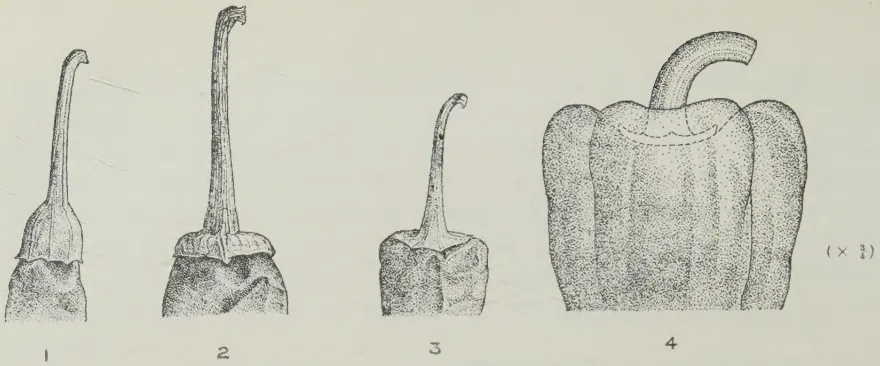
Fig. 1.—Different Types of the Calyx
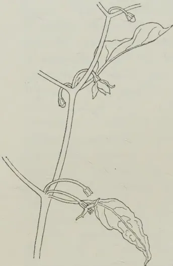
Fig. 2.—Portion of a Stem showing the Position and Number of Pedicels
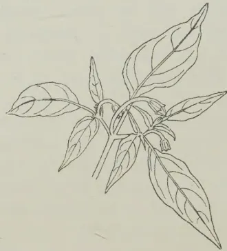
Fig. 3.—Leaves and Buds of a Tuticorin Chili Plant
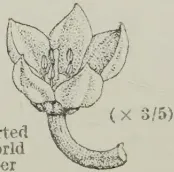
Fig. 4.—Inverted Flower of World Beater Pepper
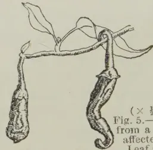
Fig. 5.—Fruits from a Plant affected by Leaf Curl
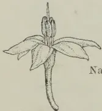
Natural Size
BEFORE DEHISCENCE
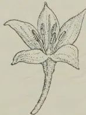
AFTER DEHISCENCE
Fig. 6.—Inverted Flowers of the Tuticorin Chili showing position of the Anthers
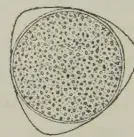
()
POLLEN GRAIN
Fig. 7
Block by Survey Dept. Ceylon.
PLATE I.
131W. R. C. PAUL, M.A. (Cantab.), Ph.D., M.Sc. (Lond.), D.I.C., F.L.S.,
AGRICULTURAL OFFICER, CENTRAL DIVISION
THE Capsicum plant is usually erect, compact in form and dichotomously branched. It is herbaceous when young, but becomes woody with age when grown in the tropics. The more primitive forms e.g., the Bird Chilli (C. frutescens L. var. minimum) and the Chilipiquin (C. frutescens L. var. baccatum) are shrubby plants while those of C. annuum L. are either herbaceous or suffrutescent. Many of the forms under cultivation tend to degenerate after one or two seasons' growth, the plants becoming stunted and the leaves diminutive and curled, while the fruits remain small and distorted. (Pl. I., Fig. 5.) A complex of malformations arises and symptoms known as "leaf curl" and "little leaf" develop, the exact nature of which is not known. It is, however, likely that insects play an important part in this disease the evidence at present pointing to the possibility of thrips being responsible either directly or as the vectors of a virus disease. Affected plants often show a slight recovery in wet weather with the development of a new flush, but the effect is only temporary. The shrubby forms of Capsicum are, however, somewhat less susceptible to "little leaf."
(a) Morphology of the leaf and stem.—The leaf is simple, entire and assymetrical. It varies in shape from ovate lanceolate to broadly ovate. The apex is usually acuminate but is sometimes acute and even obtuse while the base is abruptly acute or gradually narrows into the petiole. (Pl. I., Fig. 3). The leaves arise singly and usually develop alternately. They are flat and smooth or wrinkled, and glabrous or sub-glabrous. The more primitive forms such as the Bird Chilli are slightly pubescent along the veins, especially on the ventral surface. The colour of the leaves varies from light to dark green in different forms as also their size and thickness. The Bird Chilli and the large-fruited forms of the Bell peppers have some leaves which may be as large as 13 by 9 cm. wide, but on the
132same plant the leaves show considerable variation in size. The foliage may remain open and scattered or compact and clustered. The stem is angular when young, becoming circular in cross section later. The colour changes from green to a streaky grey and finally turns brown as the stem becomes woody. It may be either pubescent or glabrous. Webber (1912) showed that, if plants with pubescent stems are crossed with those which are glabrous, the generation is intermediate and in the , the ratio of 15 pubescent to 1 glabrous was obtained.
At the nodes, some degree of swelling takes place in almost all forms. Shaw and Khan (1928) consider this to be of no genetic significance. In certain forms, a purple patch occurs in the axils of the branches and leaves, while in others all parts of the plant may present a purple colouration. In habit, the plants may be prostrate, dwarf or tall and the branches may be spreading or erect. Webber (1912) found that the spreading type of branching was dominant to the erect. The tallest plants are those of the Bird Chilli which may reach a height of 6–8 ft., while the more highly-developed forms of the Bell peppers are the shortest, some being scarcely a foot high.
(b) Variegation and fasciation.—Ikeno (1917) showed that variegation in which irregular patches of yellow and green appeared in all parts of certain plants of C. annuum was transmissible through the seed. He considered it to be an infectious chlorosis and held that the virus was carried in the protoplasm of both the pollen and egg cells. Dale (1930) reported that leaf variegation which was of the sectorial chimaera type was inherited maternally. Cases of mottling or chlorosis in chillies have frequently been found in Ceylon, but the cause is as yet obscure.
Fasciation occurred in a Pimento plant grown by the writer, the stems being flattened and abnormally enlarged. No previous record, as far as the writer is aware, of this phenomenon in Capsicum has been made.
(c) The root system.—The root system of Indian chillies has been studied by Mohamed and Deshpande (1929). Out of 50 types examined by them, the primary root of only three was found to be of sufficient depth to be called a tap root, but even in these, the secondary roots which developed from a few extremities below the soil surface appeared to be more prominent. In all the remaining types, the primary root does not grow beyond 7 to 10 cm. below the soil surface. A large number of secondary roots originates from the main axis just below
133the soil surface and spreads in all directions forming a prominent fibrous root system. Five different kinds of root systems have been distinguished by these workers :—
The perennial chillies (C. frutescens var. minimum and var. baccatum) have a deep tap root system. The shallow, poorly-branched root system is associated with poor above-ground growth, and the vigorous root system with a prolific above-ground growth. The writer observed that the Tuticorin chilli possesses a well-developed but shallow tap root and profuse lateral roots which arise bilaterally along the short tap root and grow horizontally. (Pl. II., Fig. 1.).
Cochran (1939) who investigated the root system of the Perfection Pimento found that the tap root remains short owing more or less to damage in transplanting, but from the base of the stem to the apex of the shortened tap root a large number of laterals developed in all directions. These laterals after running in a horizontal direction for about 24 inches turned obliquely downwards near their extremities or else abruptly downward. The network of laterals constituted an efficient absorbing system. Six-months-old plants had a root-spread of about 40 inches from the base of the plants and penetrated downwards as deep as 26 inches.
The injurious effect of CO2 accumulation in the soil was examined by Noyes, Trost and Yoder (1918) who reported that when CO2 was introduced subterraneously in peppers var. cuneatum=abbreviatum, growing in Wagner pots, at the rate of 650 cc. of CO2 per pot per hour, normal root development ceased.
(d) Chromosome number.—Recent workers who have studied the chromosome number of Capsicum report that in all varieties investigated by them. Huskins and La Cour (1930) made chromosome counts from pollen mother cells in eight varieties of Capsicum annuum and two forms of C. frutescens var. baccatum. Yamamoto and Kain-ichi-Sasaki (1932) investigated eight varieties including sixteen cultural varieties, while Dixit (1933) studied not only the pollen mother cells but also the root tips of two forms of C. annuum var. acuminatum, and in all cases, the chromosome number was found to be .
1347. FLORAL BIOLOGYThe flower may be solitary or produced in small cymes of 2 to 3, in the axils of branches (Pl. I., Fig. 2), and each flower is pendent being borne on a single pedicel. It is non-odorous and inconspicuous varying in size from a diameter of about 1.2 cm. in the Bird Chilli to about 3.5 cm. in the World Beater. Flowers are produced continuously throughout the season as long as there is a growth flush.
(a) Development of the flower bud.—In the early stages of flower-bud differentiation, the calyx completely encloses the bud. As development takes place, it undergoes rapid growth and widens leaving the tip of the corolla exposed. The first external sign of flower-bud differentiation is a greenish-white protuberance which arises in the axil of a pair of lanceolate leaves or in some cases of a branch. The pedicel commences to develop, two to three days after the protuberance is first observed. The calyx remains closed till about the fifth day after which a bend forms in the pedicel either at the base or at the calyx end. In another two to three days, the corolla becomes discernible, but takes about seven to eight days more to open. As the bud develops the pedicel elongates and then curves downwards in the case of pendent types of fruit or grows upwards, and at the calyx end bends at an angle of about 60°. The pedicels are swollen at the upper end and vary in length with different forms of chillies.
A terminal bud is first initiated in the axil of a leaf or a branch, and from the base of the pedicel, two buds are differentiated on either side and in close proximity to the terminal bud. Except in the case of varieties which normally develop two or three flowers in the axil, these lateral buds absciss when less than about 5 mm. in diameter leaving only one bud which develops as a blossom.
The detailed development of the flower has been studied by Bela (1907) and recently by Cochran (1938). A conical meristematic protuberance at first appears, later becoming flattened and broadened when the primordia of the first floral organs arise at the periphery. These are the sepal lobes which curve inwards and meet above. Next appear the primordia of the corolla which also curves inwards, and within it, the whorl of stamens. Finally, the carpels become differentiated from the centre of the axil. The ovules arise from the placental tissue as small protuberances.
(b) The floral organs.
1. Pedicel.—The number of pedicels varies from one to three. In the Bird Chilli, there are invariably two to three,
135but in other chillies a single pedicel is, generally, present, though there are some forms with two or three pedicels (Pl. I, Fig. 2).
The length of the pedicel varies in different forms, small fruits, generally, having comparatively long pedicels.
Deshpande (1933) found that, in a cross between two forms of the varieties cerasiforme and acuminatum with short and long pedicels respectively, the long pedicel proved to be dominant.
2. Calyx.—The flower possesses a campanulate, sub-entire persistent calyx which is barely accrescent and is obscurely 5-toothed, though as in the case of the corolla lobes, the segments may vary from 4 to 6 and rarely more. In the young fruit of all varieties, the calyx encloses the base, but at maturity, it may either enclose it or become seated on the base of the fruit. The shape of the calyx is an important character which has been used by all taxonomists in the classification of the genus, and reference has already been made to the two calyx shapes in Capsicum, viz., (a) cup shape and (b) pateriform or saucer shape. Four types in the position of the calyx can be recognized in this genus :—
Type No. 1 is confined to C. frutescens and C. annuum vars. conoides and acuminatum, type No. 2 to C. annuum vars. cerasiforme, cuneatum and longum, type No. 3 to all varieties of C. annuum excepting vars. conoides and acuminatum.
Deshpande (1933) found that inheritance was monogenic, the pateriform calyx being dominant to the cup-shaped calyx. Miller and Fineman (1938) also obtained similar results.
3. Corolla.—In the bud, the corolla is valvate, but when fully opened, it is rotate. The basal portion is a short tube a few millimetres in length and more or less cylindrical in shape, while the lobes are imbricate and acuminate (Pl. I., Fig. 4). The number of lobes is usually 5 but it may vary from 4 to 7 and even more in abnormal flowers on the same plant. In Table I. the number of lobes in the flowers of 4 different varieties is given.
136TABLE IShowing the percentage number of corolla lobes in four different chillies
| Variety | Number of Flowers | Percentage Number of Lobes | ||||
|---|---|---|---|---|---|---|
| 4 | 5 | 6 | 7 | 8 | ||
| Bird Chilli .. | 285 | 0.3 | 96.2 | 3.5 | 0 | 0 |
| Tuticorin .. | 380 | 2.4 | 78.9 | 18.2 | 0.5 | 0 |
| Elephant's Trunk .. | 324 | 0.4 | 95.6 | 3.6 | 0.4 | 0 |
| World Beater .. | 266 | 0 | 47.4 | 46.4 | 5.9 | 0.7 |
It will be seen that in the case of the World Beater pepper there is an almost equal proportion of 5 and 6 lobes in the flowers. Each lobe is three-veined, but in colour it may vary from greenish-white to white and even violet in some forms, the Bird pepper always having characteristic greenish-white petals. Webber (1912) found that the violet x white corollas cross gave violet corollas of varying intensity in the first generation and three violet to one white in the second generation. Violet flowers are associated with purple pigmentation of leaves, stems and immature fruit, whereas white flowers are associated with green parts of the plant.
4. Stamens.—After the sepals and petals have become differentiated in the bud primordium the stamens develop next, growing over the ovary and style and enclosing them in the bud.
When the primordia of the stamens have become differentiated a single row of hypodermal archesporial cells can be seen. These cells divide periclinally to form a single row of pollen mother cells on the inside and an outer layer of similar cells which divide to form the tapetum, the middle layer and the endothecium. Cochran (1938) has followed the development of the microgametophyte and reports that the tapetal cells become binucleate and then elongate, while the sporogenous cells separate. When the pollen tetrad stage is reached the tapetal cells become distorted and degenerate. After the first and second meiotic divisions, the tetrads become rounded off and are then liberated from the pollen mother cell. The microspore nucleus containing the reduced number of chromosomes divides into two—a generative and a vegetative nucleus. The latter develops into the pollen tube cell, while the generative nucleus forms the generative cell which divides to form two male gametes within the pollen tube and before it reaches the embryo sac.
The stamens are adnate and are typically five in number. They are shorter than the filaments and dehisce longitudinally. They are alternate in position with the corolla lobes and show the same variation in numbers as the corolla lobes.
137The filaments are greenish white, white, lilac, or violet. The anthers may be bluish purple, indigo, lilac, violet or greyish yellow, while even in the same anther, a colour variation may be seen.
5. Pollen grains.—The dry pollen grains are ellipsoidal with a longitudinal groove along the middle, and they measure 36–39.5 long and 14.8 to 17.2 wide at the centre. When placed in water, they become nearly globose, with triangular points (Pl. I., Fig. 7). There is, however, a number of smaller shrunken grains with thick wavy walls instead of the larger smooth-walled normal grains. Counts of the sizes of the normal grains in water in different varieties were made but no statistically significant differences could be seen between them. In Pl. III., Fig. 4, the sizes of the grains of three representative varieties—the Bird Chilli, the Tuticorin chilli and the World Beater Bell pepper—are shown graphically.
The pollen grains of Capsicum do not germinate easily in culture. Various concentrations of cane sugar from 1 to 15 per cent. in water and 2 per cent. gelatin were tried without success. Gelatin agar plates with 2 per cent. lactic acid were also used but no satisfactory germination of pollen grains in culture could be obtained.
Gopalaratnam (1933) reported that, under field conditions, the viability of the pollen lasted for about 24 hours at Guntur in South India, but gave no experimental evidence in support of his statement. The following experiment was carried out to ascertain whether the pollen is viable in Ceylon after 24 hours. Six Tuticorin chilli plants in pots were isolated to avoid cross pollination and each day the flowers were emasculated and pollinated early morning with pollen which were removed from anthers which had dehisced about 24 hours earlier, belonging to Tuticorin plants growing elsewhere. The percentage number of flowers set is given in Table II. and it will be noted that the differences between fresh and old pollen do not appear to be great.
TABLE IIShowing the percentage number of flowers set when pollinated from freshly-dehisced anthers and from anthers which had dehisced 24 hours earlier
| Number of Flowers pollinated |
Number of Flowers set |
Percentage set |
||
|---|---|---|---|---|
| 24 hours old pollen | .. | 136 | 43 | 31.6 |
| Fresh pollen | .. | 150 | 54 | 36 |
These results, therefore, indicate that the pollen present on the anthers is viable even on the second day after the flower opens when it finally closes in the evening (vide under anthesis).
1386. Ovary.—In the more primitive forms, the ovary is two celled, but in others, the number of locules varies from two to four. In rare cases, a maximum number of five locules has been recorded by Halsted (1909). Variation in the number of locules occurs in fruits of the same plant, except in the case of varieties with cup-shaped calyces. The ovules which are anatropous are numerous and are developed in parietal placentae.
7. The style.—This organ is typically linear, but it may be either straight or curved, although on the same plant straight and curved styles occur, some forms having a higher percentage of curved styles than others. The curvature varies from the style which grows straight through the staminal column but shows a slight curvature at the tip to the extreme case where it grows away from the staminal column at its base. A count was made of the number of straight and curved styles in the representative forms of four different varieties, a style being regarded as curved when the stigma was outside the circle formed by the anthers. The results are given in Table III.
TABLE III
Showing the percentage number of curved styles
| Variety | Total Number of Styles | Percentage curved |
|---|---|---|
| Bird Chilli .. .. | 285 | 1.8 |
| Tuticorin .. .. | 380 | 22.9 |
| Elephant's Trunk .. .. | 324 | 17.3 |
| World Beater .. .. | 266 | 45.1 |
In position, the style may be longer, flush or below the level of the staminal column, and on the same plant flowers with each type of style may be found, although the percentage number of each varies with different forms of Capsicum. In Table IV. the percentage number of long, short or flush styles in certain forms of four different varieties is given.
TABLE IV
Showing the percentage number of long, short and flush styles
| Variety | Total | Percentage | ||
|---|---|---|---|---|
| Long | Short | Flush | ||
| Bird Chilli .. .. | 285 | 98 | 1 | 1 |
| Tuticorin .. .. | 380 | 95 | 2 | 3 |
| Elephant's Trunk .. .. | 324 | 91 | 3 | 6 |
| World Beater .. .. | 266 | 50 | 19 | 31 |
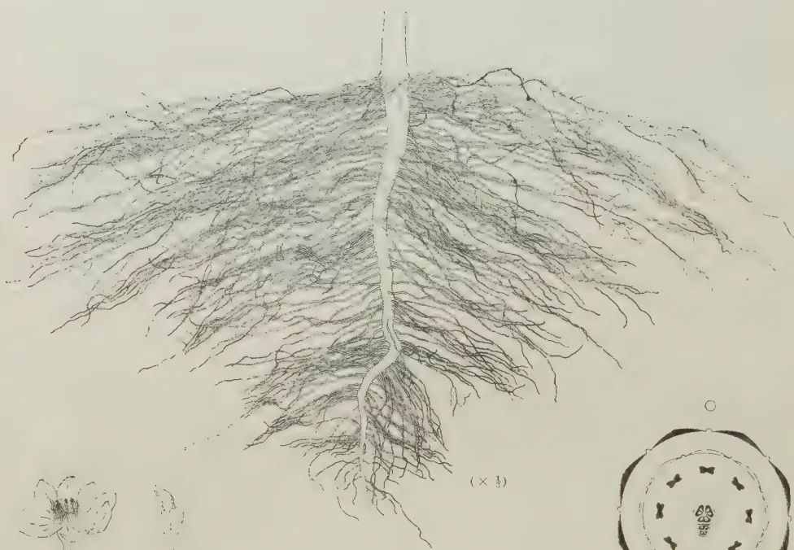
TUTICORIN CHILLI
Fig. 1.—Root System of the Tuticorin Chili
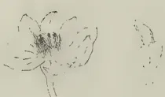
Fig. 2.—Abnormal Flower showing two Ovaries ()
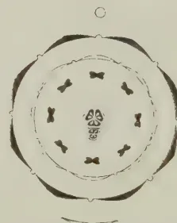
Fig. 3.—Floral Diagram of an abnormal Flower
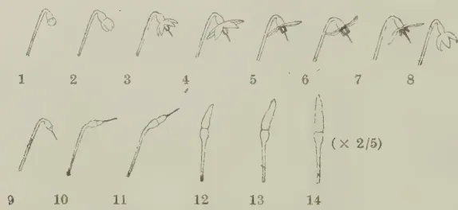
Fig. 4.—Stages in Anthesis and movement of the Pedicel in the Bird Chili ()
Sketch by Surjit Dasht, Calcutta.
PLATE II.
139The size of the style again varies in different forms, but shows an increase with the size of the flower. It has four vascular bundles, a conducting tissue through which the pollen tubes pass and a stylar canal in the centre.
The stigma is sub-capitate and bifid and when receptive becomes mucilaginous. It dries up about the third day after the opening of the flower and in the majority of flowers except those in the Bell pepper group, drops soon after fertilization has been effected. In the Bell peppers the style may persist for a few days after fertilization.
8. Teratology.—Abnormalities in the cultivated forms occur quite frequently and several workers have investigated cases of teratology in the genus. Cochran (1934) has, after reviewing the previous work, carried out a detailed study of the abnormalities in the flower and fruit which are the parts most subject to aberrant development in this plant.
The normal flower of Capsicum has its parts in fives, but the number of calyx and corolla lobes as well as stamens may in abnormal cases be as many as 13. Abnormal corollas may persist until the ovary develops and splits the corolla tube. Cochran (loc. cit.) recorded 13 normally developed stamens in one case of abnormality, while the writer found a flower with eight stamens (Pl. II., Figs. 2 and 3). They are sometimes sessile or are devoid of their anthers. They may undergo partial metamorphosis resulting in union with the petals or they may even become petaloid. Pistiloidy of the stamens has also been recorded. The style may be absent altogether or there may be as many as three or four in each flower. The abnormal style does not absciss but develops with the ovary and it is generally short and broad as well as severely contorted. The flower with eight corolla lobes and stamens to which reference was made also possessed two ovaries, one being abnormally small. Chalcid flies often cause abnormalities in the flowers while in the case of fruits an attack of thrips or mites (Pl. I., Fig. 5) or mosaic disease can cause aberrant development. With regard to the ovules, some may abort and remain withered and discoloured, while others may become foliaceous.
Certain internal abnormalities are found in the fruit, and structures which develop parthenogenetically have been described by Harris (1906), Cochran (1934 and 1935) and Bausor (1935). The bodies are round, irregularly contorted or linear and they may be solid or show a cavity. They may vary from a few mm. to about 2 cm. in length or more and are generally terminated by a minute style. Cochran (loc. cit.) showed that the structures investigated by him were hypodermal in origin and development took place simultaneously with the accompanying
140ovules. When the bud was 1 to 3 mm. in diameter, initiation took place, and a group of undifferentiated, lightly-staining cells which divide very rapidly were differentiated, the rate of growth decreasing with increase in size and age. These internal structures are more often found in the varieties grossum, cuneatum and cerasiforme than in the other varieties. Harris (loc. cit.) recorded only 2 cases out of 1,100 of the acuminatum and longum varieties but 12.7 per cent. from 2,671 fruits of grossum, cuneatum and cerasiforme varieties. Cochran (loc. cit.) found 5.4 per cent. to be abnormal out of 2,002 fruits of world Beater peppers examined by him.
(c) Floral secretion.
1. The secreting mechanism.—Capsicum flowers have no scent but owing to the secretion of nectar at the base of the corolla, several types of insects are attracted to them. The nectar accumulates as glistening globules, each at the base of a corolla lobe, about the time that the flower opens in the morning. Gopalaratnam (1933) reported that the secretion commences at about 4 A.M. but the writer found that the globules become visible with a hand lens at about 8 A.M., and were fully formed at about 9 A.M.
The secreting mechanism in this genus is not a distinct morphological structure as are typical nectar glands. Martin, Erwin and Lounsberry (1932) studied the mechanism of nectar secretion in Capsicum and found that this process takes place in the region of the corolla tube and the adnate basal portions of the filaments. They observed the presence of pores between the filaments leading from deep but narrow grooves and through these the nectar reaches the inner surface of the corolla tube. They stated that, when the flower commences to open and secretion is to take place, the epidermal walls of the corolla filament tube as well as the sides of the groove show gelatinization. The middle layer of the epidermal walls swells, becomes mucilaginous and pushes up the cuticle, finally rupturing it, and so allowing the secretion to reach the surface. The epidermal cells at the bottom of the groove do not show any modification and the secretions from the sides of the groove and the epidermal cells nearby, accumulate in the bottom of the grooves and then pass through the outlet to the surface of the petals.
2. Chemical nature of the nectar.—Martin, Erwin and Lounsberry (1932) carried out microchemical tests of the nectar secreted in the flowers of pungent forms of Capsicum and found osazone of dextrose present, as yellow, slender, sharp-pointed crystals, as well as capsaicin.
141The nectar in Capsicum is considered by these workers to be the liquefied mucilage with sugar and other elements which are incidentally present. The inner layer of the wall of the epidermal cells imbibes solutions from the tissues within and with liquefaction and consequent loss of inhabitation towards the outer surface, the solutions are allowed to flow away. As the flower opens, the starch in the corolla lobes becomes hydrolysed and sugars are formed. These may pass towards the base of the corolla while a certain amount may also come directly from the transportation stream. The starch then is utilized in the formation of mucilage which becomes converted into nectar.
(d) Movement of the pedicel.—In the early stage of flower bud differentiation, the pedicel is erect, but as development proceeds it elongates and responds geotropically so that before the flower opens it assumes a pendent position. When the curvature in the pedicel occurs near its point of attachment to the stem it remains in the same position even after fruit has fully developed and the fruits, therefore, become pendent; but when the curvature takes place near the point of attachment of the pedicel to the calyx (Pl. II., Fig. 4) the pedicel becomes erect after fertilization and as a result the fruit is either erect or more or less horizontal. The various stages in the movement of the pedicel in the latter type of curvature from the commencement of anthesis to the erect position of the fruit are shown in Pl. II., Fig. 4. Just before the bud is due to open, it remains at an angle of about with the pedicel but after anthesis is complete and the corolla has dropped there is a gradual upward movement of the pedicel until it is almost vertical and the fruit remains erect. Shaw and Khan (1928) report that the time taken in assuming the erect position in the Bird Chilli is about 8 to 19 days after flowering. In Ceylon, the period has been found to vary from 6 to 22 days with a mean of days.
(e) Anthesis and anther dehiscence.—The day prior to opening, a flower bud becomes swollen and turgid, thus being distinguishable from other buds which are due to open a day or two later. Anthesis commences usually early morning by the appearance of an aperture at the tip of the bud caused by the separation of the corolla lobes at this place (Pl. II., Fig. 4, No. 2). The separation gradually continues and when the flower is fully opened the lobes are outstretched (Pl. II., Fig. 4, No. 5). The expansion of the corolla lobes is a result of diastatic activity causing hydrolysis of the starch present in the lobes and an increase in the osmotic pressure of the cell sap. Ball (1933) has shown that, in the case of Turnea ulmifolia var. elegans in
142Ceylon, if the buds are subject to illumination the previous night, the hydrolysis of the starch is to a large extent inhibited owing to a diminution in the diastatic activity of the illuminated petals and anthesis is prevented. As the flower opens, the anthers which remain compact in the bud, closely enclosing the style, commence to separate from each other and to move away from the style, and when dehiscence is complete by noon on the second day, the anthers are found widely separated at their distal ends (Pl. I., Fig. 6.)
Following the horizontal position of the corolla lobes at which stage the flower is fully opened, they recurve upwards at their tips and then commence to close. At about 4.0 P.M., they remain closed at an angle of about , having partly lost their turgidity. The following morning, after regaining turgescence with a renewal of diastatic activity they open out once more, showing an increase this time in width of about 25 mm. per lobe in the case of the Tuticorin chilli during a period of about two hours from 4–6 A.M. After remaining fully out-stretched and even recurving towards midday, they finally close by evening and the corollas drop between the third day and the fifth day after the commencement of anthesis.
Shrivastava (1916) reported that, in the Central Provinces of India, during the second week of October, nearly all the buds open on clear days between 4 and 7 A.M., but on cloudy days they continue to open till 9 A.M., while a few stray buds open as early as 1 A.M. and as late as 12 noon. According to him the flowers remain fully open until 4 P.M. when they close. They open again the next day between 4 A.M. and 7 A.M. and finally close at 6 P.M.
Shaw and Khan (1928) found that the buds commence to open at 7.30 A.M. and continue opening until 1 P.M., the majority opening between 8 A.M. and 10 A.M. They state that, on a cold and dewy morning, the flowers open later than when it is warm and sunny, but those buds which open late in the day remain in a half opened condition until the following day, when they become fully opened somewhat earlier than other buds which are opening for the first time on that date. These workers found that the flowers do not close at night but remain open for 2–3 days.
Erwin (1932) working at Iowa in the United States, observed that 50 per cent. of the flowers opened at about 6.15 A.M. and the majority of the rest by about 8.15 A.M., activity ceasing after about 10.15 A.M. He noted the temperature changes on the day his records were made and found that it rose from F. at 6 A.M. to F. at 11 A.M. and he, therefore, concluded that temperature and sunlight were important factors in anthesis, but believed that the latter was probably the more
This image is a scan of a blank page. The paper has a light beige or cream-colored tint. There are a few very small, dark specks scattered across the surface, which appear to be scanning artifacts or dust particles. No text, lines, or other markings are present on the page.[Page not transcribed: OCR unreliable (stage 4 review list)]
143important although he had no definite experimental evidence for this view. On the second day, he found that the blossoms became wilted or had dropped off, the period of anthesis being in most cases less than a day. This is contrary to what Shrivastava and also Shaw and Khan recorded in India.
Gopalaratnam (1933) carried out detailed observations of the various stages of anthesis and reported that the flowers commence opening as early as from 2 A.M. to 4 A.M., the lobes separating completely between 5 A.M. and 6.30 A.M., the Bird Chilli being a plant whose flowers in comparison open last. He added that between 7.30 and 9.30 A.M. the lobes recurve and between 4.45 and 7.30 P.M. they close again, opening the next morning between 5 and 8 A.M. They finally close on the second day between 4 and 6.30 P.M. and the corolla drops at night.
Observations were made by the writer on flowers of the Tumeric chilli and of these the number which fully opened each hour from 6.30 A.M. to 11.30 A.M. were recorded and the results are shown graphically in Pl. III., Fig. 1. It will be seen that the largest number of flowers were fully open at about 8.30 A.M. The number of flowers with their anthers dehisced at each hour was also recorded and shown in the same figure from which it will be observed that the anthers are protogynous and dehisce soon after the flowers are opened. Dehiscence takes place longitudinally, commencing from the top of the anther and as the sacs become gradually ruptured, the pollen grains become exposed in white- or cream-coloured masses. The slightest touch is sufficient to cause the pollen masses to fall freely and on a windy day the sacs become empty in about half an hour.
Shaw and Khan (1928) reported that dehiscence took place between half an hour to one hour after the flower opened and in a few cases as much as five hours, while Erwin (1932) stated that dehiscence was generally effected about three hours after sunrise by which time the corolla lobes were fully expanded. He considered temperature to be the dominant factor in the dehiscence of the anthers. Gopalaratnam (1933) found that dehiscence usually commenced after sunrise and added that this was an indication of the influence of temperature. The writer found that dehiscence commenced from 7 to 10.30 A.M. depending on the variety and was complete between 10 A.M. and noon. The Bird Chilli commences to dehisce from about 10.30 A.M., dehiscence being completed by 12 noon.
In order to ascertain whether temperature, light or humidity is the dominant factor in the dehiscence of the anthers, Tumeric chilli plants in pots were placed under large bell jars under high and low humidity conditions, and in sunlight and darkness (blackened jars). The flowers could not, however, be
144examined satisfactorily owing to the presence of moisture on the sides of the jars, and in the next series of experiments, fresh flowers picked early in the morning, before their anthers had dehisced, were placed in Petri dishes over moistened cotton wool. In the first series, the following treatments were compared :—
In the case of treatments B and D, the dishes were blackened. For treatments A and B, the dishes were placed under sunlight at a temperature of 33°C. and for C and D on a laboratory bench. For each treatment 20 flowers were used, in four Petri dishes each containing 5 flowers. The results are shown graphically in Pl. III., Fig. 2. It will be seen that light is more important than temperature in anther dehiscence. In the next experiment high and low humidity were compared, the dishes in the former having moistened cotton wool and the latter a small quantity of in them, and the results are shown graphically in Pl. III., Fig. 3. Low humidity, therefore, has a definite effect in promoting dehiscence. The various stages in anthesis and dehiscence of the anthers, with the periods of time taken for each under Ceylon conditions, are summarized in Table V.
TABLE VShowing the stages in anthesis and anther dehiscence with the intervals of time taken for each
| Stages in Anthesis and Anther Dehiscence | Day | Time |
|---|---|---|
| 1. Commencement of opening of corolla lobes .. .. | 1st | 2 A.M. to 5 A.M. |
| 2. Separation of corolla lobes (flower half opened) .. .. | 1st | 5 A.M. to 6.30 A.M. |
| 3. Corolla lobes outstretched (flower fully opened) .. .. | 1st | 8 A.M. to 9 A.M. |
| 4. Secretion of nectar .. .. | 1st | 8 A.M. to 9 A.M. |
| 5. Commencement of anther dehiscence .. .. | 1st | 7.30 A.M. |
| 6. 50 per cent. dehiscence of anthers .. .. | 1st | 8.30 A.M. to 9.30 A.M. |
| 7. Completion of dehiscence .. .. | 1st | 10 A.M. to 12 A.M. |
| 8. Closing of corolla lobes .. .. | 1st | 4 P.M. to 6.30 P.M. |
| 9. Reopening of corolla lobes .. .. | 2nd | 4 A.M. to 5 A.M. |
| 10. Final closing of corolla .. .. | 2nd | 4 P.M. to 6.30 P.M. |
| 11. Shedding of corolla .. .. | 2nd— 5th |
|
| 12. Drying of style and stigma .. .. | 3rd | |
| 13. Shedding of style and stigma .. .. | 4th— 6th |
In Table VI is shown the percentage number of corollas shed each day after anthesis. It will be noted that in comparison with the Tusicorin chilli, the World Beater and Chinese Giant forms of Bell peppers retain their corollas for a longer period in the field after anthesis.
TABLE VIShowing the percentage number of corollas shed each day
| Number of Days after Anthesis | Percentage Number of Corollas Shed each Day | ||
|---|---|---|---|
| Tusicorin | World Beater | Chinese Giant | |
| 1 .. .. | 0 | 0 | 0 |
| 2 .. .. | 13 | 0 | 0 |
| 3 .. .. | 58 | 33 | 16 |
| 4 .. .. | 29 | 53 | 65 |
| 5 .. .. | 0 | 14 | 19 |
(To be continued.)
146G. V. WICKRAMASEKERA, A.I.C.T.A. (Trinidad), Dip. Agric. (Poona),
ACTING PADDY OFFICER
IN all important rice growing countries of the world, the crop is mainly grown under irrigation. It is said that about four fifths of the crop is transplanted; although in countries like California and New South Wales, where the cultivation of rice has been taken up in comparatively recent times, the crop is either drilled or sown broadcast owing to the scarcity and high cost of labour. The highest average acre yields are reported from Spain, Italy, and Japan where heavy dressings of organic and inorganic manures are applied. Under conditions obtaining in Ceylon such heavy manuring would be uneconomical. In Spain and Japan transplanting is practised; but in Italy only to the extent of 10 per cent. owing again to the high cost of labour; a similar area approximately is drilled by machines, and the remainder sown broadcast by hand.
The claim that, other conditions being equal, the practice of transplanting is the best method of increasing yields is, however, not justified. Ramiah (1) for instance states: "It has sometimes been explained that transplanting acts in a way like root pruning, the injury to the root system stimulating the growth of the sub-aerial portion and resulting in increase in tillering. It is also stated that transplanting gives a shock to the plants which stimulates better growth and better tillering and consequently better yields. This shock theory cannot, however, be accepted since seed directly dibbled in lines yield very much higher than even the transplanted crop." Experiments conducted at Madras, in other parts of India, and outside India have proved that dibbling sprouted seeds in the field gives higher yields than transplanting does. In an Indian report (2) it is stated that "the results of broadcasting versus transplanting experiments conducted during the last three years show that a broadcast crop sown at the right moment and well managed gives as good a yield as the transplanted crop; but so long as one cannot foresee weather conditions, it is probably better to adopt transplanting which generally gives greater vigour to the crop than a broadcast one".
147The difficulty in the adoption of this practice of transplanting on a field scale, under conditions obtaining in Ceylon, and the very limited scope existing for the practice, which is contrary to popular belief, will be discussed later. The evolution of the system of cultivation described below was thus not purely adventure but rather necessity born of the realization of local requirements and existing conditions. The observation that the disturbance to a paddy crop caused by the unsuccessful attempts of the field owners to secure some cattle trespassing on the field, in order to claim the customary compensation, actually resulted in a marked improvement in yield gave the idea to the writer that stirring the soil, in other words an enforced inter-cultivation, would be of benefit. In certain parts of India it is sometimes the practice to plough a crop sown broadcast in order to thin it and reduce weed growth; the intrinsic difference between this and the system outlined below will be clear. Investigations were accordingly undertaken to devise a system of cultivation which would be sufficiently simple, practicable and admitting of ready adoption by local cultivators. The lines of inquiry were influenced by the fact that dry land crops respond to inter-cultivation of the soil. To facilitate this operation in the case of rice, the crop would have to be either sown in drills or dibbled. Seed-drills are obtainable for dry-land sowing of rice, but for mud-land conditions a suitable seed-drill is not yet available. Ceylon paddy fields are asweddumized or constructed on the contour, and consequently most plots are small and irregular in shape. The undulating nature of the land, the general lack of depth of surface soil, and the heavy rainfall experienced in most areas militate against the construction of large plots which would require considerable levelling to ensure satisfactory irrigation, and this would expose the subsoil in parts. Two important factors which militate against any improvements being effected are (i.) local laws of inheritance which cause ownership of land in small undivided shares and (ii.) the insecurity and the unattractive conditions of tenure. In the northern, north-eastern, and north-western coastal belts of the dry zone areas of Ceylon where soil is light and friable, dry cultivation of the soil and dry sowing in anticipation of rain are practised; in most other parts of the Island soils are clayey and of varying degrees of stiffness and do not admit of ploughing until the early rains soften the soil. In the latter areas mud cultivation of rice is the general practice. Under the circumstances, any system of cultivation should be suited to what we might term existing domestic conditions, should be practicable, admit of easy adoption and not call for any drastic changes in the social system or an outlay beyond the means of the small-holders or tenant cultivators. For these reasons, a system of cultivation calculated to stir the soil and stimulate
148root growth without damage to a crop sown broadcast is likely to be advantageous. The possibilities of reaching such a solution of the problem were advanced by observing the response to the preliminary treatments described below. In the preliminary trials conducted at Tissamaharama Paddy Experiment Station in maha (north-east monsoon) 1937-38 and yala (south-west monsoon) 1938 seasons the effects of the under-mentioned treatments were studied :
Treatment (i.) was effective, (ii.) was not effective and many plants were lacerated, and (iii.) was effective but expensive. (This system is specially suitable for narrow, steep-terraced plots and very marshy fields where animal labour cannot be used.) Treatment (iv.) was not effective, (v.) was more expensive than cultivation with either type of harrow and too many plants were uprooted, (vi.) and (vii.) were effective.
Observations on treatments (v.), (vi.) and (vii.) suggested possibilities beyond the expectations of the writer. The operations were conducted when the crop was 3 to 4 weeks old and in standing water.
As a result of the information gained above it was possible to proceed with field trials.
The field trials were conducted at the Tissamaharama Paddy Experiment Station, in maha 1938-39 and in yala 1939. The following treatments were tested :—
These treatments were tested in eight randomized blocks of acre plots with a one foot border of plants surrounding each plot. The variety of paddy sown was suduheenati (Hf-9), the period of duration of which is months in maha and months in yala. The seed rate was the normal quantity for short duration varieties i.e., bushels per acre. The treatments 1, 2, 3, 4, and 6 were carried out when the plants were 4 weeks old. In treatments 1, 2, 3, and 6 about 3 inches of water were impounded in the plots overnight: the following day the various operations were carried out. The water was then reduced till it just covered the soil. Women were employed to weed lightly, thin out paddy seedlings from thickly-sown patches and to fill in vacancies. Care was taken to maintain for a week sufficient water to cover the soil thus enabling the paddy plants to recover while inhibiting the growth of smaller weeds. A week after harrowing, the fields were drained for two days and henceforth normal irrigation was resumed. The fields leased for this trial had never been ploughed previously. Before the first trial was laid down the fields were ploughed with the "Ceres" iron plough, puddled with the wooden-toothed harrow and levelled with the levelling board or poru lalla. No manures were applied.
TABLE I A.Maha 1938-39.
| Yield of Grain in lb. per Plot | Total | |||||||
|---|---|---|---|---|---|---|---|---|
| Treatments. | ||||||||
| 1 | 2 | 3 | 4 | 5 | 6 | 7 | ||
| Blocks A | .. 48.5.. | 52.5.. | 45.0.. | 45.5.. | 39.5.. | 50.0.. | 51.0.. | 332.0 |
| B | .. 48.0.. | 38.0.. | 39.0.. | 44.0.. | 50.0.. | 53.0.. | 48.0.. | 320.0 |
| C | .. 53.0.. | 45.0.. | 43.5.. | 51.0.. | 32.0.. | 39.0.. | 30.5.. | 294.0 |
| D | .. 41.0.. | 46.0.. | 33.0.. | 40.0.. | 34.0.. | 43.5.. | 29.0.. | 266.5 |
| E | .. 46.0.. | 40.0.. | 39.5.. | 33.0.. | 26.5.. | 30.0.. | 28.0.. | 243.0 |
| F | .. 48.5.. | 38.5 | 38.0.. | 43.0.. | 35.0.. | 44.0.. | 33.5.. | 280.5 |
| G | .. 47.0.. | 46.0.. | 37.5.. | 40.5.. | 34.0.. | 43.0.. | 33.0.. | 281.0 |
| H | .. 43.5.. | 44.5.. | 32.0.. | 43.0.. | 35.5.. | 46.0.. | 27.5.. | 272.0 |
| Total | ..375.5 | 350.5 | 307.5 | 340.0 | 286.5 | 348.5 | 280.5 | 2289.0 |
TABLE I B.
Analysis of Variance
| Degree of Freedom. | Sum of Squares. | Mean Square. | Standard Deviation. | Log E. | Standard error of difference between means. | |
|---|---|---|---|---|---|---|
| Blocks | .. 7.. | 830.911.. | ||||
| Treatments | .. 6.. | 964.812.. | 160.802.. | 12.681.. | 2.5401 | |
| Error | .. 42.. | 1007.902.. | 23.998.. | 4.899.. | 1.5891.. | 2.449 |
| 55 | 2803.625 | |||||
(Calc.) = 0.9510
(Sig. ) = 0.6010
The result is highly significant.
TABLE I C.
Yield per Acre, Cost of Treatments and Profit and Loss
| Treatments. | Yield | Extra cost of treatment per acre. Rs. e. |
Profit and loss per acre. Rs. c. |
|||
|---|---|---|---|---|---|---|
| Mean per Plot lb. | Per Acre | |||||
| Grain. | Straw. | Grain | Straw | |||
| bushels.* | lb. | |||||
| 1. Harrowed with wooden-toothed harrow .. | 46.94.. | 34.7.. | 61.2151.4.. | 125.22 | 75† | |
| 2. Harrowed with modified wooden-toothed harrow .. | 43.44.. | 31.7.. | 57.1965.4.. | 125.16 | 75 | |
| 3. Pressed down with hand levelling board .. | 38.44.. | 27.7.. | 49.1717.4.. | 125.06 | 540 | |
| 4. Weeding, &c. .. | 42.50.. | 31.5.. | 55.1953.0.. | 125.05 | 0 | |
| 5. Transplanted .. | 35.81.. | 31.0.. | 46.1922.0.. | 125.09 | 25 | |
| 6. Trampled by buffaloes .. | 43.56.. | 30.5.. | 56.1891.0.. | 125.14 | 90 | |
| 7. Control .. | 35.06.. | 27.3.. | 45.1692.6.. | — | — | |
* The weight of a bushel of paddy has been considered as 48 lb.
† When the price of paddy is Rs. 1.50 a bushel.
The significant difference when ,
= 4.94 lb. per plot or
6.38 bushels per acre.
The cost of the various treatments is shown below.
Cost of harrowing a 3-acre block—
| Rs. c. | |
|---|---|
| Hire of one pair of buffaloes .. | 0 75 |
| One ploughman .. | 0 60 |
| One boy driving buffaloes .. | 0 30 |
| Six women lightly weeding, thinning out and supplying vacancies at 35 cents per woman per day .. | 2 10 |
| Cost of 3 acres .. | 3 75 |
| Cost of 1 acre .. | 1 25 |
| Rs. | c. | |
|---|---|---|
| Hire of two pairs of buffaloes .. .. . | 1 | 50 |
| One boy driving buffaloes .. .. . | 0 | 30 |
| Four women lightly weeding, thinning and supplying vacancies at 35 cents per woman per day .. .. . | 1 | 40 |
| Cost of 2 acres .. | 3 | 20 |
| Cost of 1 acre .. | 1 | 60 |
| Cost of preparation, sowing and upkeep of nursery up to transplanting time .. .. . | 3 | 50 |
| Twenty-five women to uproot and transplant an acre at 35 cents per woman per day .. .. . | 8 | 75 |
| Cost per acre .. | 12 | 25 |
| Less saving in seed paddy .. .. . | 1 | 50 |
| Cost per acre .. | 10 | 75 |
| One labourer per acre per day .. .. . | 0 | 60 |
| 28½ women per acre at 35 cents per woman per day, approximately | 10 | 0 |
The result is highly significant. The significant difference between treatments is 4.94 lb. per plot or approximately 6 bushels per acre. The treatments (i.) harrowing with the wooden-toothed harrow, (ii.) harrowing with the modified wooden-toothed harrow, (iv.) weeding and (vi.) trampling by buffaloes have given significantly higher yields than the control. There are, however, no significant yield differences between any of the four treatments specified. Increased yields ranging from 10 to 16 bushels per acre equivalent to approximately 22 to 35 per cent. have been obtained. The mean increase in yield obtained by harrowing is 14 bushels per acre or approximately 33 per cent. There is no significant difference between treatments (iii.) and (v.) and the control. Harrowing the crop with either type of harrow and trampling the crop by buffaloes are found to be the most economical treatments.
152TABLE II A.Yala 1939.
Yield of Grain in lb. per Plot
| Blocks | Treatments. | Total | ||||||
|---|---|---|---|---|---|---|---|---|
| 1 | 2 | 3 | 4 | 5 | 6 | 7 | ||
| A | 68.5 | 62.0 | 57.0 | 54.0 | 52.5 | 62.0 | 56.0 | 412.0 |
| B | 63.0 | 56.5 | 53.5 | 60.5 | 63.0 | 63.5 | 51.5 | 411.5 |
| C | 68.5 | 61.0 | 58.0 | 61.8 | 58.0 | 55.0 | 58.0 | 420.3 |
| D | 57.5 | 52.0 | 47.0 | 52.4 | 53.0 | 55.9 | 48.8 | 366.6 |
| E | 62.0 | 68.0 | 41.5 | 52.5 | 49.5 | 43.0 | 46.6 | 363.1 |
| F | 50.0 | 48.0 | 47.5 | 38.0 | 48.5 | 59.5 | 49.7 | 341.2 |
| G | 48.0 | 49.5 | 56.0 | 51.5 | 44.5 | 46.0 | 45.0 | 340.5 |
| H | 51.0 | 51.5 | 49.5 | 45.5 | 50.0 | 51.5 | 49.0 | 348.0 |
| Total | 468.5 | 448.5 | 410.0 | 416.2 | 419.0 | 436.4 | 404.6 | 3003.2 |
Analysis of Variance
| Degrees of Freedom. | Sum of Squares. | Mean Square. | Standard Deviation. | Log E. | Standard error of difference between means. | |
|---|---|---|---|---|---|---|
| Blocks | 7 | 1146.4742 | ||||
| Treatments | 6 | 401.8460 | 66.97433 | 8.18366 | 2.1022 | |
| Error | 42 | 1073.6683 | 25.56352 | 5.05604 | 1.6206 | 2.528 |
| 55 | 2621.9885 |
Z (Calc.) = 0.4816
Z (Sig. P = 0.05) = 0.4276
The result is significant.
TABLE II C.Yield per Acre, Cost of Treatments and Profit and Loss
| Yield | Extra cost of treatment per acre. | Profit and loss per acre. | ||||
|---|---|---|---|---|---|---|
| Mean per Plot lb. | Per Acre | |||||
| Grain. | Straw. | Grain | Straw | |||
| bushels. | lb. | |||||
| Rs. c. | Rs. c. | |||||
| 1. Harrowed with wooden-toothed harrow | 58.56 | 59.0 | 75.3459 | 6.125 | 1 25 | 13 75 |
| 2. Harrowed with modified wooden-toothed harrow | 56.06 | 53.3 | 72.3304 | 6.125 | 1 25 | 9 25 |
| 3. Pressed down with hand levelling board | 51.25 | 50.1 | 66.3106 | 2.060 | 0 60 | 0 90 |
| 4. Weeding, &c. | 52.02 | 53.2 | 67.3298 | 4.050 | 5 00 | 2 00 |
| 5. Transplanted | 52.37 | 42.0 | 67.2604 | 0.175 | 10 75 | 7 75 |
| 6. Trampled by buffaloes | 54.55 | 53.3 | 70.3304 | 6.160 | 1 60 | 5 90 |
| 7. Control | 50.57 | 49.2 | 65.3050 | 4.000 | — | — |
The significant difference when P = .05, t = 2.018
= 5.10 lb. per plot or
6.59 bushels per acre.
153RESULTSThe result is significant. The significant difference between treatments is 5.1 lb. per plot or approximately 6½ bushels per acre. Harrowing the growing crop with either type of harrow is again significantly superior to the control. As in the last season the type of harrow used made no significant difference in yields. The yield of the control has risen to approximately 65 bushels per acre.
GENERAL DISCUSSION OF RESULTSIn the maha 1938–39 trials (a) the two treatments of harrowing the crop with either type of harrow, (b) weeding, thinning out and filling vacancies, and (c) trampling the crop by buffaloes gave significantly increased yields while in the following yala 1939 season only the treatments involving harrowing (with either type of harrow) yielded significantly increased yields. Under the conditions of the experiments, the significant differences between treatments were 6.4 and 6.6 bushels per acre in maha and yala, respectively. In yala the two treatments of weeding and trampling by buffaloes failed to produce significant increases in yields over the control. This is attributable to the fact that the cumulative effects of two seasons of good preparatory tillage and the assumption that the yields in yala in the dry zone are higher than in maha had raised the yields of the controls from 45 bushels per acre in maha 1938–39 to 65 bushels in yala 1939. In contrast to the previous season, hardly any weeds were present in the second season of the trial. This is also borne out by the fact that 22 per cent. or 10 bushels increase in yield by weeding was obtained in maha 1938–39, while in the following yala season the increase by this treatment was only 3 per cent. or 2 bushels. This is often so even in manurial treatments where the response on poorly-cultivated paddy soils is greater than on well-cultivated soils. It is suggested that the increase in yield obtained by weeding may be attributed partly to the effect of soil disturbance caused by the removal of weeds and by the movement of labourers in the field, and partly to the reduction of competition. In fields heavily infested with weeds reduction of competition would obviously be the important factor. In the trials under review transplanting was included not because this practice is ever likely to be taken up in the large irrigable areas where the population is very sparse and only short duration varieties are grown both in the maha and yala seasons, but merely for comparison of yields. In the first season's trials it was clear that the spacing of single seedlings 6 inches apart was too wide for this variety, hence in the following season 2 seedlings were planted 3 inches apart. Even thus, however, the difference in
154yield over the control is not significant. This confirms Ramiah's view (1) that, "with the early varieties irrespective of number of ears and the length of ears, it is the total number of plants, planted per unit area that influences the total yield"; which proves that it is not remunerative to transplant short-duration varieties. The cost of raising a nursery and transplanting an acre was Rs. 12.25 and the saving in seed paddy was Rs. 1.50 per acre, thus the extra cost of transplanting an acre was Rs. 10.75. Lord (3) says, "there is no doubt that with long-aged paddies transplanting will materially increase the yield of grains; 20 per cent. would be a fair estimate of the increase". The extra cost of transplanting an acre is roughly estimated by him at Rs. 13.50. If we take the yield of a long-duration crop sown broadcast to be as high as 60 bushels, the increase obtained would be about 12 bushels. The cost of transplanting would vary from Rs. 12 to Rs. 15 per acre depending on the efficiency of workers, the distance the seedlings have to be transported, &c., hence it will be seen that, where labour has to be paid for, the net profit is barely appreciable; and with the price of paddy nearer Re. 1 than Rs. 1.50 a bushel, as is often the case, it does not pay to transplant.
The increases in yield obtained in maha 1938-39, by harrowing a growing crop of months duration with the old and modified harrows, have been 16 and 12 bushels per acre, respectively, and the control yielded 45 bushels per acre. In yala 1939 the increased yields have been 10 and 7 bushels, respectively, with the control yielding as much as 65 bushels per acre. The cost was Rs. 1.25 per acre.
The cost of this operation would vary with the rates of wages and the hire of buffaloes in the particular locality and would be 75 cents to Rs. 1.75 per acre, which would include the wages of women labourers employed in light weeding, thinning and supplying vacancies after the operation.
Transplanting is applicable only in a limited area and is not economical at present market rates. Nor does the system of weeding, thinning out and filling vacancies in a crop sown broadcast offer any real solution.
There are two main seasons in Ceylon, the maha commencing with the north-east monsoon rains and the yala corresponding to the period of the south-west monsoon rains. In between these two main seasons a meda (Sinhalese) or iddi (Tamil) crop of short-duration varieties of rice is grown in some districts where local conditions do not permit the cultivation of a crop.
155in the main seasons. A mahapassa or late maha crop is grown in other areas where floods early in the season prevent the normal cultivation. The area under rice in Ceylon is computed at approximately 850,000 acres. Some tracts are cultivated only in maha and some only in yala, for causes mainly beyond the control of the cultivator. Roughly a little over two thirds of the cultivable area is cropped in maha and a slightly lower acreage in yala. The maha crop is sown from about the middle of August to the middle of November, according to the local conditions and the variety of paddy. This crop is reaped in February/March. The period from sowing to maturity of the varieties ranges from to 6 months. At higher and cooler elevations 6-month varieties are known to have delayed flowering and taken as much as nine months from sowing to maturity. The yala crop is sown in March/April and harvested in August/September and the period from sowing to maturity ranges from to 5 months according to the variety.
As a general practice the mada-kumburu or muddy fields are sown first and the goda-kumburu or the drier fields are sown later with shorter duration varieties. On a rough computation about of the area under rice in maha is sown with short-duration varieties maturing in to months, the acreage under 4-month varieties predominating. In yala over of the area cultivated is sown under short-duration varieties maturing in about 2 to 4 months, with 3-month varieties predominating.
In the maha season long-duration varieties of rice are grown in some parts of the North-Western, Western, Sabaragamuwa, and Central Provinces, and in the manawari or rain-fed tracts in the Northern and Eastern Provinces. Considerable areas in these tracts too are sown with short-duration varieties owing to failure, through avoidable and unavoidable causes, to prepare fields in time to sow the long-duration varieties.
In the yala season the area occupied by long-duration varieties is negligible and is confined to some parts of the Western and Southern Provinces where the fields are marshy and overlaid with peaty soil. These areas are liable to frequent inundation thus leaving the possibility of raising a successful crop in constant doubt. Transplanting is not practicable in these areas. It has also been shown that by transplanting short-duration varieties the increased yields obtained are not commensurate with the effort and cost involved. It will thus be evident that the potential area where the practice of transplanting could be adopted is limited.
In Ceylon the rice crop is generally sown broadcast. The sowing of long-duration varieties in the manawari tracts
156necessitates preparation of the soil in dry weather and dry sowing in anticipation of early rains as the period of duration of the rains is comparatively short.
Transplanting is more or less a general practice only in the maha season and only in some parts of the Kandy and Kegalla Districts and in a few negligible areas under well irrigation in the manawari fields of the Jaffna Peninsula. The chief reason why transplanting is practised in some parts of the Kandy and Kegalla Districts in maha is the survival in these areas of the ancient system of communal or co-operative labour known as attan. The writer (4) gives details of this system and describes the method of transplanting as it is practised. An added reason is the greater dependability of water for irrigation. In other areas where long-duration varieties are cultivated the decline of the attan system and the higher cost of labour added to diminished certainty of control of water have militated against the adoption of this practice. Transplanting short-duration varieties on the attan system is not practised even in areas where long-duration varieties are generally transplanted as it is recognized as unremunerative. It will thus be manifest that the scope for extending the practice of transplanting in Ceylon is very limited; that it is moreover not as widely practised, and the increase in yield obtained by the practice is not as great, as is generally believed.
In the mid-country districts where transplanting is practised in the maha season with long-duration varieties, workers have a tendency to get about their work in a leisurely manner when they work on the attan system. This may explain to some extent the apparent inefficiency of women labourers engaged in transplanting in Ceylon when compared with the fact that in Burma 6 women will transplant an acre in a day. In reality, however, the total cost of transplanting an acre in Burma appears to be no less than in Ceylon. Grant (5) estimates that one man in a day can pluck seedlings in the nursery and tie them up into 25 to 30 small standard size bundles (lets or phyo phats). About 550-600 phyo phats are required to transplant an acre. Calculating wages at 10 annas per man and the same rate per woman engaged in transplanting, the cost works out at Rs. 16 to Rs. 17 per acre. This probably includes transport charges to considerable distances from the nursery.
The practice of weeding, thinning and supplying vacancies in a crop sown broadcast is prevalent in the Kandy and Kegalla Districts on the attan system and in the Jaffna Peninsula on payment. Even in these areas, however, this operation is generally practised with short-duration varieties. The average cost of this operation is approximately Rs. 10 to Rs. 12 per acre. Lord (6) for instance is of the opinion that "a conservative
157estimate of the increase to be gained by weeding would not be less than 20-25 per cent. When all labour is paid for in money the cost will vary but should nowhere exceed Rs. 12 per acre whereas the least increase in yield should be 6 bushels per acre."
In the days when paddy fetched Rs. 2.50 a bushel, intensive methods of cultivation, viz., transplanting long-duration varieties and weeding, thinning out and supplying vacancies were found remunerative. During the past decade the price of paddy has ranged from about 90 cents to Rs. 1.50 per bushel, hence the adoption of costly intensive methods of cultivation are no longer justified.
The suggested scheme of harrowing a growing crop interferes with no established practice, needs no elaborate apparatus nor outlay and will not merely prove profitable to the cultivator but will raise local production considerably.
This scheme is economical as it costs only 75 cents to Rs. 1.75 per acre depending on the local rates of wages, the hire of buffaloes, the extent of vacancies to be filled and the presence of weeds. It does not call for an outlay beyond the means of the tenant cultivator and the small land-owner, since a harrow can be made by anyone with a knowledge of the rudiments of carpentry at a cost of between Rs. 2.50 and Rs. 3, and would moreover give several years of service.
In semi-marshy fields and in narrow, terraced fields on steep hill sides implements drawn by buffaloes cannot be used. In such areas hand implements for stirring the soil on the same principle as harrowing the crop could be used.
The initial use of the light iron plough, followed by the wooden-toothed harrow for mudding the soil, effective levelling with levelling boards, a judicious system of manuring depending on local requirements, and the adoption of this system of harrowing a growing crop followed by light weeding, thinning out and filling vacancies, are therefore advanced as the best method of rice cultivation under conditions obtaining in Ceylon. The solving within a measurable period of the problem of increasing local production (which has not kept pace with the increase in population during the past two decades), has, as a result of the information obtained from the above trials, become a possibility.
The quickest and the most significant step forward in the direction of appreciably reducing the deficit in the supply of home grown rice would, therefore, be the early popularization of this simple, economical and effective system of harrowing a
158growing crop combined with the procedure suggested above. The cry has long since been raised that the local production of rice should be increased and this is interpreted in practice as involving the cultivation of an increased acreage under paddy (vide The Tropical Agriculturist, Vol. XCIV. No. I., pages 3-9, January, 1940). It is necessary to increase the yield of paddy per acre as well as to extend the acreage. The stabilization of the price of paddy would greatly stimulate interest in rice cultivation. If on the computed acreage of 850,000 acres a wooden-toothed harrow is used in the preparation of 400,000 acres and the crop on a similar area subsequently harrowed, on a conservative estimate an increase in yield of 8 bushels per acre would be obtained. This would result in an annual increased output of 6,400,000 bushels of paddy which is equivalent to the crop from an additional 160,000 acres yielding the present average of 40 bushels per acre per annum.
1. When the rice crop sown broadcast is 3-4 weeks old, about 3 inches of water are impounded in the fields overnight.
2. The following day the crop is harrowed in standing water using the wooden-toothed harrow drawn by buffaloes. An open-mesh net made of string and tied round the muzzle of the animals would effectively prevent them from browsing while at work. Except when going over fairly marshy patches the harrow is weighted by riding on it or placing a large stone on the log. It is driven in one direction and the same area is not gone over twice. When necessary it is lifted off the ground and paddy and weed seedlings adhering to the tines are then removed.
3. A few hours later or on the following day the water is reduced till it just covers the soil. Women are employed to weed lightly, thin out paddy seedlings from thickly sown patches and fill in vacancies which often becomes necessary in fields sown broadcast owing to faulty levelling and wash-aways.
In wind-swept areas it is advisable when filling in vacancies to plant the seedlings inclined slightly to windward.
4. The recovery of seedlings in the harrowed field depends on the maintenance of sufficient standing water to cover the soil for a period of 5 to 7 days after harrowing. In sandy soils water is maintained for 7 to 8 days. If vacancies are few and a high percentage of seedling weeds is present, a greater depth of water is maintained.
In areas where sufficient water may not be available when required for proper maintenance during the critical period it is not advisable to drain the fields after harrowing.
159In areas where adequate water is available it is advantageous to drain the fields for a day or two and then resume normal irrigation.
The above recommendations are based on experience gained so far. Further studies are in progress to determine the optimum time of harrowing, the effect on long-duration varieties of more than one harrowing at intervals of about a month, the effect of harrowing a transplanted crop, the effect of applying artificial manures after harrowing, &c., and findings may conceivably suggest alterations in technique.
[The Department of Agriculture proposes to apply the suggested method of treatment on a comparatively large area—about 25 acres—treated against a similar area as control. The results of this field trial will be published in due course. Ed. The T. A.]
2—J. N. 92903 (2/40) 160C. H. GADD, D.Sc. (Birm.),
AND
C. A. LOOS
(MYCOLOGIST AND ASSISTANT IN MYCOLOGY, TEA
RESEARCH INSTITUTE)*
IN October, 1939, the junior author observed in his garden† several Easter or Madonna lily plants (Lilium longiflorum) which exhibited symptoms of a mosaic disease. A photograph of a typical specimen after transplanting to a 12in. pot is reproduced as Fig. 1.
The lower leaves were normal in colour, shape and size, but the upper were somewhat paler with numerous light green, or yellowish, broad streaks or spots. The blotched leaves except the youngest were also markedly curled downwards which made them appear shorter than they actually were. The chlorotic markings on the youngest leaves were pale green, but became more numerous and yellow as the leaves became older. Normally, the spots were about 5 mm. long, and tended to coalesce into somewhat irregular blotches; but streaks up to 6 cm. long sometimes occurred. As the leaves expanded they became more markedly curled, till often the leaf-tip was pointing vertically upwards.
Later the chlorotic areas tended to become white and desiccated in the middle as though the epidermis had become loose. These white areas soon became rusty coloured and dead. In a short time, the necrosis involved entire leaves which hung from the stem, withered and brown (Fig. 2).
At this stage the plants had an unusual appearance. The lowest leaves appeared healthy and of a normal dark green colour. Above these was a zone in which the leaves, still adhering to the stem, hung down, withered, brown and dead. Above this zone, the leaves were curled and showed typical
* The Editor, while welcoming contributions to The Tropical Agriculturist, wishes to make it clear that he does not necessarily endorse the views expressed in articles contributed by persons who are not officers of the Department of Agriculture.
† St. Coombs, Talawakelle. Elevation 4,500 feet.
1
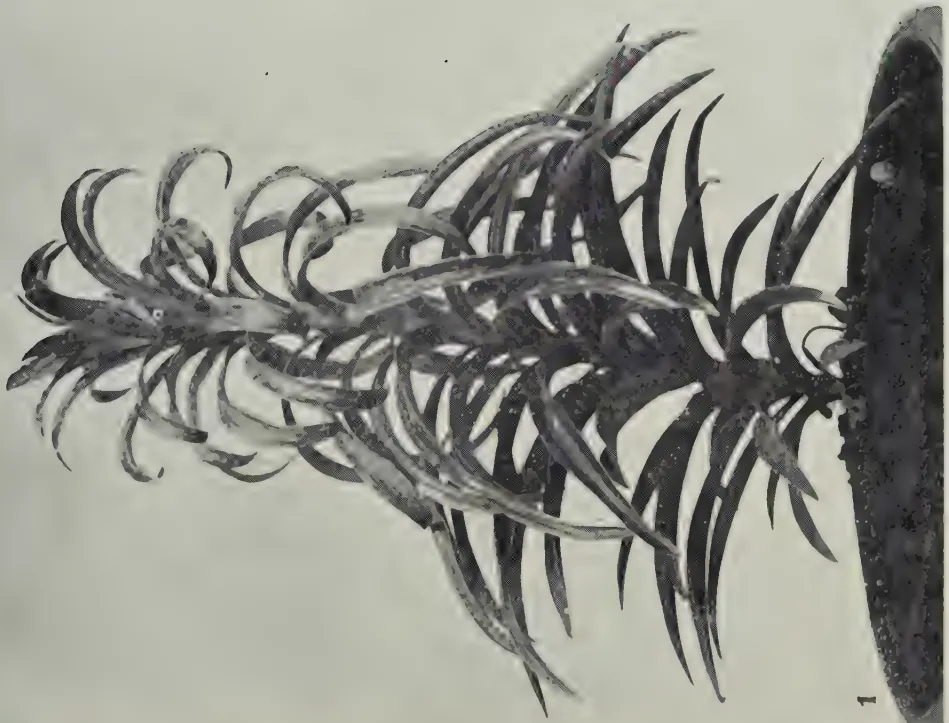
FIG. 1.—MADONNA LILY NATURALLY INFECTED WITH MOSAIC, EARLY STAGE
2
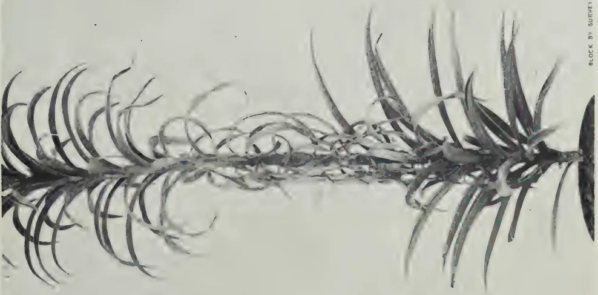
FIG. 2.—MOSAIC LILY PLANT SHOWING DEAD LEAVES, LATER STAGE
BLOCK BY SHIRLEY DEPT. Ceylon.
This image is a scan of a blank page. The background is a uniform light beige or off-white color. There are a few very small, dark specks scattered across the surface, which appear to be scanning artifacts or dust particles. No text, lines, or other graphical elements are present. 161chlorotic patches. The lowest, apparently healthy, leaves and many of the upper chlorotic leaves persisted till flowering was completed.
Except in one instance the flowers opened normally and without marked distortion. The apices of the perianth segments (petals) curled back somewhat more sharply than do those of healthy plants, and there were a number of pale green patches on the white perianth. The distortion of the petals varied with the amount of green present on them. The greatest distortion occurred when the green patches were at the edges; then the outline became somewhat irregular and sometimes the edge was rolled inwards. Fig. 3 is a typical photograph of the inflorescence of a naturally infected plant. Although a panchromatic film was used the pale green blotches do not show. The slight distortion referred to is best seen in the two flowers photographed from the side. The central flower shows the stamens and style to be normal.
The exception mentioned at the beginning of the last paragraph refers to one plant of which all the flowers but one became aborted. It is doubtful that the abortion was due to this disease though no other explanation is offered of it.
No intracellular inclusions (x bodies) were found in leaf sections cut and stained for this examination.
The symptoms exhibited by these plants resemble those of the mosaic disease of the Easter lily described by Ogilvie and Guterman (3), which is reputed to have been one of the causes of the decline of the lily industry in Bermuda, at the beginning of this century. In Ceylon, however, the diseased leaves appear to die earlier than is the case in Bermuda. In Bermuda, flowering commences early in March, and the plants normally die down during June (2), and withering of the diseased (mosaic) leaves is stated to occur about two months before the normal dying of the plants (3). In Ceylon, the affected leaves die relatively soon after the mosaic symptoms are evident, as will be shown later.
In Bermuda, Guterman (1) states that the buds and flowers of mosaic plants are so distorted as to be valueless. Ogilvie and Guterman (3) describe three forms of the disease of which form B has flowers not markedly distorted. Smith (5) referring to the disease as it occurs in the British Isles states that the effect on the flower is seen in spotting and crinkling, and in the perianth segments cohering at the tips so that the buds do not open. In the Bermuda form A, which apparently is the commonest form, the perianth segments tend to adhere at the tips and the stamens either do not develop anthers or are twisted and deformed, and the pistil is much twisted. No abnormality of the stamens or pistil was noted in the flowers of Ceylon specimens examined.
162Mosaic is known in all the commercial varieties of Lilium longiflorum and the cause of the disease is a virus which Price (4) has demonstrated to be a strain of the cucumber virus, Cucumis virus 1 of K. M. Smith's classification (5).
Lily cultivation in Ceylon is of little or no economic importance, but it is a common plant of up-country gardens and the flowers are in great demand for bridal bouquets and for decorations during Easter and Christmas. Owing to the fact that Cucumis virus 1 is known to affect a large number of plants, (K. M. Smith (5) gives a list of 100, many of which are grown here), the presence of this disease becomes of greater importance than if lilies alone were affected. For this reason small experiments to demonstrate the infectious nature of the disease and to ascertain whether it passed readily to other plants were undertaken.
To Lily.—A number of lily plants were put into 12-inch pots and brought into the laboratory. Some were used for experiment, but three were kept as controls. No symptom of the disease developed in these three plants during the course of the experiments and no further mention will be made of them.
Attempts to transmit the disease to two healthy lily plants by mechanical means, i.e., by rubbing several leaves with juice extracted from diseased leaves, failed.
Two unidentified species of Aphids were collected from healthy lily plants. One was green in colour and the other, black. These aphids were fed on the leaves of a diseased lily plant for 48 hours and were then transferred to healthy plants.
All the black aphids were placed on the leaves of one healthy plant which, however, remained healthy and at no time showed any symptom of the disease.
The green aphids were transferred from the diseased leaves to two healthy plants and were allowed to feed on one leaf of each plant for 48 hours. Both plants later exhibited the disease symptoms in severe form. The progress of the disease in both plants was similar.
The first symptom to be observed was the presence of slightly chlorotic streaks on the leaf on which the insects had fed, and on two leaves vertically above it. These streaks were faintly visible 3 days after the insects had started to feed, and were most easily observed when the leaves were held up to the light, i.e., by transmitted light. After 7 days, the leaf on which the insects had fed had begun to curl downwards and had small chlorotic spots near the leaf base. The two leaves next above this showed no symptom, but the 3rd, which was the first directly above the inoculated leaf, had 5 chlorotic streaks; the 6th had
163two; the 9th a large number; and the 11th had 10 chlorotic patches. The last-mentioned leaf was not fully expanded. Younger leaves were still unmarked. At this stage the virus had moved vertically upwards in a straight line from the base of the inoculated leaf and the affected leaves were all on one side of the plant. No leaf below that on which the insects had fed or on the other side of the stem showed any symptom.
A week later, the chlorotic patches on the leaves already mentioned were more numerous and in some cases they had coalesced. Commonly they were 4 or 5 mm. long, but sometimes were as much as 1 cm. The downward curl of affected leaves was becoming prominent and the disease had affected more young leaves. The virus path had ceased to be a vertical line as all the young leaves above the 11th mentioned above, with two exceptions, showed chlorotic areas.
Necrosis became evident towards the end of the third week, and three weeks later, leaves were hanging from the stem, withered and dead. The first leaves to die were the 9th and 11th above the inoculated leaf. In some cases the chlorotic areas were restricted to one side of the mid-rib only, then that side only became necrotic and withered. The early development of necrotic areas in leaves not yet fully expanded resulted in their distortion; so, some leaves in addition to being curled downwards were also bent to one side or other.
Fig. 2 is of a naturally infected plant from the garden showing withered leaves hanging from the stem. It is evident from this photograph that infection started on the left hand side and moved vertically upwards, affecting leaves on that side only for a time before reaching leaves on the other side of the plant. Note the dead leaves amongst the lower healthy leaves on the left side only, and that desiccation is more advanced on the left in the zone of dead leaves.
To Cucumber.—Attempts were made to transmit the virus from lily to cucumber, both mechanically and by means of the green aphids.
Diseased leaves from a mosaic lily plant were ground in a mortar and the juice so obtained was rubbed on five leaves of two young cucumber plants raised from Gill and Searle's Long Green seed in pots. The rubbed areas of both plants became chlorotic in 5 days and were dead 5 days later. There were no typical mosaic symptoms, only a slight yellowing of the veins near the necrotic areas.
Three other similar cucumber plants, with 4 to 7 expanded leaves were placed in insect cages. A number of green aphids collected from lilies and which had fed on a mosaic plant for 24 hours were transferred to the leaves of these plants. The
164aphids soon settled down to feed. After 5 days the aphids were removed as a distinct chlorosis became evident along the veins of the leaves. This later spread to the interveinal areas giving the leaves a mosaic appearance, particularly in those parts where the aphids had been feeding. The photograph reproduced in Fig. 6 was taken on the 8th day. The infected leaves tended to droop somewhat and curl at the edges, but the youngest leaf of each plant developed a marked curl and was severely wrinkled. About this time some of the chlorotic areas began to die. As necrosis set in, the leaf areas collapsed as though desiccated.
After six weeks, each plant had developed two or three new leaves. Without exception these showed no sign of chlorosis or other symptom of disease except that they remained small. The older leaves on which the aphids had fed still showed large chlorotic areas some of which had become necrotic. The youngest leaf on which the aphids had fed remained small, was badly curled and wrinkled, and had yellow veins. It is suggested that this leaf was most markedly affected partly because the aphids tended to migrate towards it when feeding, and partly because it was not full-grown at the time of infection.
To Tomato.—Similar experiments were carried out on young tomato plants raised from Earl's Earliana seed grown in the laboratory. The leaves of one plant were rubbed with the sap extracted from the mosaic lily leaves. The rubbed areas became yellow in 5 days and later died, but there was no yellowing of the veins or other symptoms. No symptom developed on the leaves not rubbed, nor on the leaves developed later.
Infective aphids were transferred from a mosaic lily to two young tomato plants growing in the laboratory. A slight yellowing of some of the veins became visible on the 5th day when the aphids were removed, and chlorotic spots and streaks soon developed in these regions. The photograph reproduced in Fig. 4 was taken on the 9th day and is typical of the leaves on which the aphids fed. A few chlorotic areas had become necrotic. The leaves tended to curl, particularly the youngest which was wrinkled. Six weeks after the aphids had been removed each plant had produced 4 new leaves. These were normal and apparently healthy except one, the lowest of one plant, which had one or two leaflets distorted. It is suggested that these leaflets became infected while in the bud.
To Turnip.—The leaves of 2 young turnip plants were rubbed with juice from leaves of a mosaic lily. The rubbed areas became necrotic, and there was a slight crinkling of the rubbed leaves. The edges of the necrotic areas became chlorotic.
This image is a scan of a blank page. The background is a uniform light beige or off-white color. There are a few very small, faint dark specks scattered across the surface, which appear to be scanning artifacts or dust particles. No text, lines, or other graphical elements are present.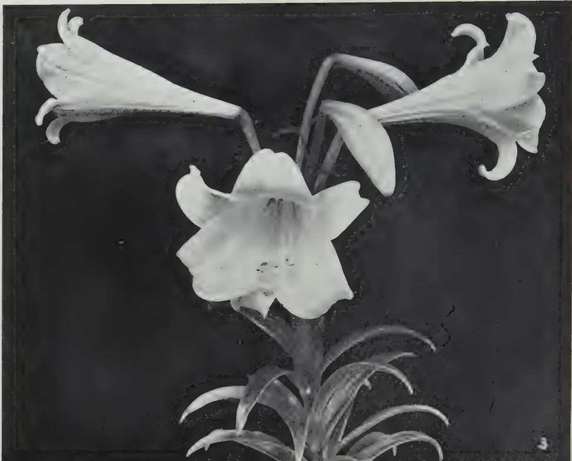
A black and white photograph of a lily plant's inflorescence. Three large, trumpet-shaped flowers are shown in various stages of development, attached to a central stem. The flowers have six petals and prominent stamens. Below the flowers, several long, narrow leaves are visible, emerging from a base. The background is dark, making the light-colored plant stand out. A small number '3' is visible in the bottom right corner of the image.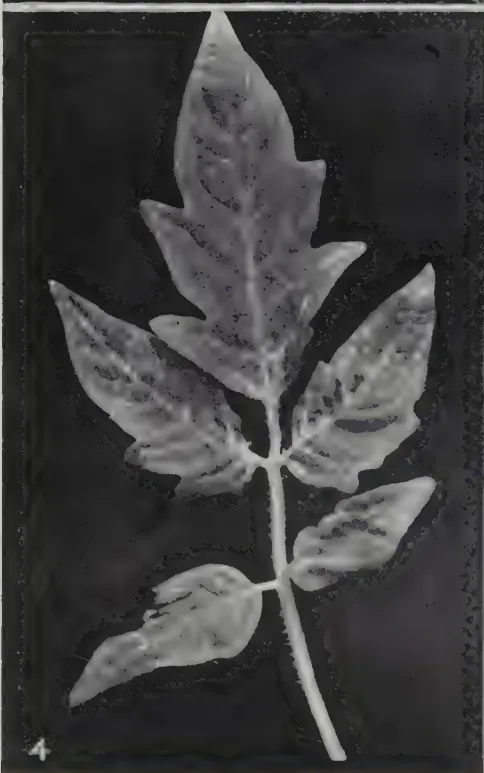
A black and white photograph of a tomato leaf that has been infected with lily mosaic virus. The leaf shows significant distortion, with the veins appearing thickened and the surface covered in a mottled pattern of light and dark areas. The leaf is attached to a stem with other smaller, similarly affected leaves. A small number '4' is visible in the bottom left corner of the image.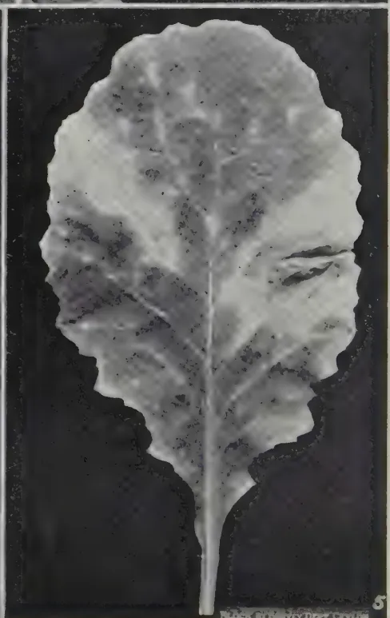
A black and white photograph of a turnip leaf that has been infected with lily mosaic virus. The leaf is large and broad, with a distinct mottled pattern of light and dark areas across its surface. The veins are visible but appear somewhat distorted. The leaf is set against a dark background. A small number '5' is visible in the bottom right corner of the image.FIG. 3.—INFLORESCENCE OF MOSAIC LILY PLANT
FIG. 4.—TOMATO LEAF INFECTED WITH LILY MOSAIC VIRUS
FIG. 5.—TURNIP LEAF INFECTED WITH LILY MOSAIC VIRUS
BLANK BY SANFORD DRY CEMENT
165The virus was also transmitted to two plants by means of aphids. On the 9th day when the photograph, reproduced as Fig. 5, was taken the leaves exhibited numerous yellow areas some of which became necrotic. Later, the younger leaves became wrinkled and curled. This symptom was more marked in turnip than in the other plants experimented with. Leaves developed after the aphids were removed developed normally.
To Tobacco.—Attempts to transmit the disease to 3 tobacco seedlings (Harrison's Special) by means of aphids failed.
The symptoms of lily mosaic as observed in Ceylon resemble those described from Bermuda in many respects, but appear to differ, as already pointed out, in that affected leaves die earlier and the flowers are not so distorted, in Ceylon.
The writers are unaware of any experimental transmissions of the lily mosaic virus to cucumber, tomato and turnip elsewhere. These plants, however, are known to be hosts of Cucumis virus 1 of which the Bermuda lily mosaic virus is a strain.
When cucumber plants are infected by Cucumis virus 1, according to K. M. Smith (1) the characteristic symptoms are a yellow mottle on all leaves developed after infection, some leaf distortion and stunting of the plant. Accompanying these symptoms there is a gradual downward curling of the edges of the leaf and the surface presents a finely wrinkled appearance, the tissue between the small veins becoming slightly raised so as to form minute convex surfaces.
On tomato the first characteristic of the disease caused by Cucumis virus 1 in America appears about 10 days after inoculation, and consists of a spindling appearance of the young leaves. When unfolded, these leaves are characterized by a marked reduction of the lamina, often to such an extent that only the mid-rib is left. Chlorosis of the older leaves, especially along the veins, is also an early symptom. In England, the symptoms on tomato are usually less pronounced, and a very mild mottle without distortion or with only slight narrowing of the leaves are the usual symptoms.
The inoculation experiments here described with the virus from lily mosaic suggest that, except in Lily, the disease does not become systemic but is restricted to those leaves which are actually inoculated by the aphids or by rubbing. No attempt, however, was made to recover the virus from leaves developed after the aphids had been removed. Of the symptoms noted, the chlorosis, curling and wrinkling resemble those described
166above, except that the wrinkling was not general, but restricted mainly to the youngest inoculated leaves. Wrinkling was more apparent in turnip than in other plants used, but here the wrinkles were not due to the interveinal tissue forming convex surfaces only as many such areas were depressed, not raised, so as to form concave surfaces.
During the experiments it was noted that the aphids tended to migrate towards the youngest leaves for feeding. Consequently it was to be expected that the youngest leaves would be the most severely affected, and because they were not full grown they would exhibit distortions most markedly.
A critical study of the virus concerned in lily mosaic in Ceylon has not been attempted. All that was intended was to demonstrate the infectious nature of the disease, to show that it is caused by a virus, and to draw attention to its possible serious nature. The experiments described do this, but they also indicate that the virus concerned does not cause symptoms exactly like those described for Cucumis virus 1 elsewhere. It seems probable that the Ceylon virus is a variant of Cucumis virus 1 rather than a different virus altogether.
During these investigations the writers have taken every opportunity of examining the Easter lilies growing in other gardens. Although very little mosaic disease, as here described for the season of infection only, was seen, there was considerable evidence of serious deterioration of the bulbs and resulting plants in practically all gardens. Mosaic disease is known to cause serious deterioration of bulbs in Bermuda but mosaic is not the only disease which will cause that.
Although no serious search has been made for mosaic symptoms on cucumbers, tomatoes or turnips, growing naturally, a diseased cucumber plant was seen in a garden in the Uda Pussellawa district. A photograph of a diseased leaf is reproduced as Fig. 7 which should be compared with the leaves in Fig. 6. An attempt to transfer that disease to young plants by rubbing and by aphids found on the plant failed. There is some doubt, therefore, that the disease is identical with that caused by the lily mosaic virus.
The lily plants on which the disease was first observed in Ceylon were not recent importations nor were any recently imported bulbs, known to the writers, being grown in other gardens in the vicinity. The virus of lily mosaic elsewhere is known to be carried in the bulb and there is good reason to suppose that that is equally true in Ceylon. Consequently there is prima facie evidence that this virus is already established in Ceylon and it is suggested that this virus is largely responsible for the observed deterioration of lily plants.
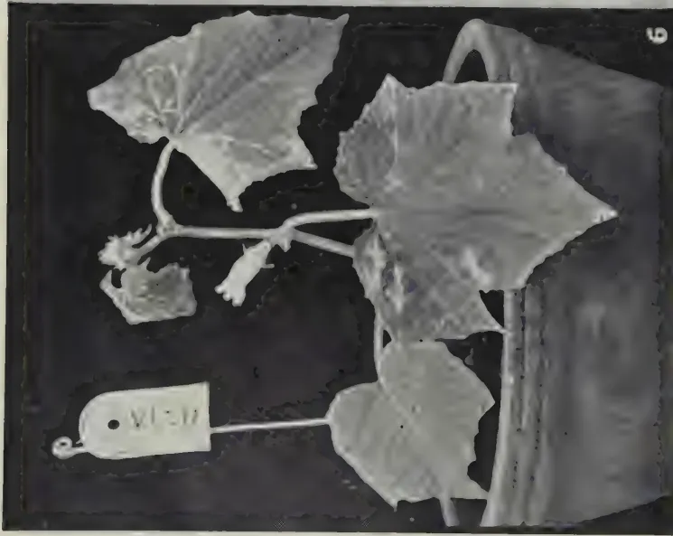
FIG. 6.—CUCUMBER PLANT INFECTED WITH LITT MOSAIC VIRUS
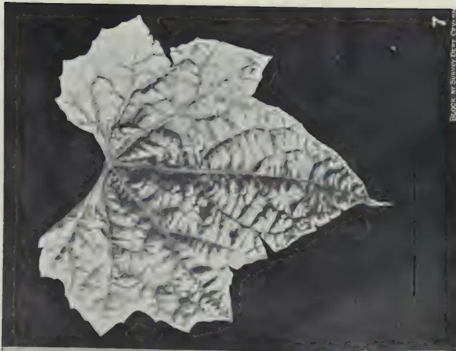
FIG. 7.—CUCUMBER LEAF SHOWING MOSAIC SYMPTOMS—
NATURAL INFECTION.
BLOCK BY SURVEY DEPT. CUM. 1911
This image is a scan of a blank page. The paper has a light beige or cream-colored tint. There are some very faint, blurry artifacts scattered across the surface, which appear to be dust or imperfections in the paper or the scanning process. No text, lines, or other markings are present. 167TREATMENTAs with other virus diseases of this nature, the most practicable method of treatment is the removal and destruction of infected plants as soon as they are observed. In addition, treatment to keep the healthy plants free from the carrier insects should be undertaken where practicable. Infected plants rarely, if ever, recover and any treatment undertaken in the hope of effecting a cure usually results in a wider distribution of the disease.
SUMMARYA mosaic disease of Easter lilies in Ceylon is described.
The disease is easily transmitted by aphids to other lily plants.
The virus has also been transmitted experimentally to cucumbers, tomatoes and turnips, but in these plants the mosaic symptom did not become systemic.
The removal of infected plants as soon as they are recognized is recommended.
LITERATURE CITED(1) Guterman, C. E. F., 1928.—A preliminary report on mechanical transmission of the mosaic of Lilium auratum. Phytopath., 18, pp. 1025–1026.
(2) Ogilvie, L., 1928.—A transmissible virus disease of the Easter Lily. Ann. App. Biol., 15, pp. 540–562.
(3) — & Guterman, C. E. F., 1929.—A mosaic disease of the Easter Lily. Phytopath., 19, pp. 311–315.
(4) Price, W. C., 1937.—Classification of Lily mosaic virus. Phytopath., 27, pp. 561–569.
(5) Smith, K. M., 1937.—Text Book of Plant Virus diseases, London.
168M. CRAWFORD, M.R.C.V.S.,
DEPUTY DIRECTOR (ANIMAL HUSBANDRY) AND GOVERNMENT VETERINARY SURGEON
TO breeders of livestock in Ceylon coconut poonac is of special interest because it is produced locally and in large quantities. At a time such as the present when supplies of imported foodstuffs are precarious it becomes of even greater interest and importance. With shortage of supplies and rising prices of other foodstuffs coconut poonac will of necessity have to enter even more largely than in normal times into the rations fed to livestock.
It is of value at such a time to consider how best this foodstuff can be utilized for various classes of stock.
It is hardly necessary to state that there are two important types of coconut poonac available in Ceylon, namely, chekku poonac produced by crushing copra in the local type of press or chekku operated by bulls and mill poonac produced by crushing copra by various types of machinery in modern mills.
Analyses of both types are given below. It will be seen that the most important difference between the two types is that chekku poonac contains a very much higher percentage of oil than mill poonac. Indeed the proportion of oil is so high that it makes chekku poonac definitely unsuitable for feeding in any considerable amount to some classes of livestock.
This type of poonac is produced in small quantities as compared with mill poonac and finds its greatest use as a food for cart bulls engaged in heavy work. If used for dairy cattle the amount fed per day should be limited as large quantities are likely to depress the milk yield and lead to an overfat condition of the cows. It may be used more liberally for young growing cattle but any tendency of the cattle to become overfat, especially in the case of heifers, should be checked as soon as noticed by reducing the quantity. As a food for pigs, chekku poonac is definitely unsuitable for the production of the best quality pork as the carcase of pigs fed largely on it will be excessively fat. It is also unsuitable as a food for hens for the same reason.
With these few remarks about chekku poonac we will pass on to mill poonac which is available in much larger quantities and is more generally used.
169Mill Poonac—Physical Characteristics.—Coconut poonac differs from other poonacs such as gingelly, earth nut, linseed, &c., as it is much softer and absorbs water very readily. On account of this its keeping qualities are not so good as of other harder poonacs. Unless stored in a very dry atmosphere it is apt to become rancid and mouldy rather rapidly.
For this reason it is not wise to lay in large stocks unless a good dry store-room is available.
When soaked in water it swells very considerably. If fed dry in large quantities there is danger of the stomach becoming over distended. To avoid this it is the usual practice to soak it well before feeding.
Coconut poonac has a very distinct taste and smell of its own. Livestock which have not been accustomed to it often refuse to eat it at first, but they soon become used to it and eat it readily.
Chemical composition.—The composition of an average good sample is given in the table. This shows that coconut poonac falls into the class of foodstuffs moderately rich in protein such as palm nut cake or undecorticated cotton cake. It contains considerably less protein and more carbohydrate than such foods as gingelly, earth nut or linseed poonacs. The oil content is roughly the same as in linseed cake. The total mineral content is round about the same as in most other oil cakes or poonacs. A feature of the mineral content which requires to be borne in mind is that it is very poor in calcium. Coconut poonac is a good source of supply of phosphorous but a poor source of calcium.
The oil contained in this poonac is a “hard” oil. Butter made from the milk of cows fed on it will be firm in consistence as will the fat of pigs which have been fed largely on coconut poonac. This is a valuable property especially in a warm climate.
An interesting fact about the composition of coconut poonac is that its nutritive ratio, that is the proportion of protein to carbohydrate and fat, is 1 to 4. This one to four ratio is the generally accepted correct ratio for a balanced ration for milk production in cattle, for young growing pigs, and for egg production in poultry. In other words coconut poonac is in itself a balanced ration and can be added to any balanced mixture of foodstuffs without altering the nutritive ratio. Any livestock owner who is using a mixture of foodstuffs which has been compounded so as to form a balanced ration can add coconut poonac to the mixture in any quantity required without the necessity of working out rather complicated calculations.
170The points to be observed when feeding coconut poonac to various classes of livestock are summarized below.
For cattle.—It has been stated above that coconut poonac is in itself a balanced ration for milk production. That means that it contains protein in the correct proportion to carbohydrate and fat. It is not, however, safe to assume that coconut poonac alone as the concentrate ration will be ideal for dairy cattle. For instance such a ration would certainly contain too little calcium to supply the needs of a milking cow.
There are many cows in Ceylon which receive little else than coconut poonac as a concentrate ration. Such cows may milk well and look well as a rule but it is not uncommon to hear their owners complain that they experience difficulty in getting such cows to calve regularly. The cause of this difficulty is most likely the deficiency of calcium and possibly in addition an overfat condition of the cows as a result of depending too much on coconut poonac alone. The deficiency in calcium can be corrected by adding a simple mineral mixture such as 2 parts of ground limestone or coral and 1 part of common salt to the poonac and it is strongly recommended that in all cases where coconut poonac forms a large part of the ration such a mineral mixture should be used. Three pounds of the mixture of limestone and salt should be added to each 100 lb. of poonac.
The deficiency of calcium in coconut poonac can also be corrected by including in the diet some foodstuff which is rich in calcium. Prominent among foods which can be added to coconut poonac for this purpose are gingelly poonac, any of the pulses such as dhal husk, and gram.
This method of correcting the deficiency of coconut poonac is better than the addition of a mineral mixture because the calcium as contained in such foods as gingelly is more readily assimilated by the cattle than when it is in the mineral or inorganic form. The obvious drawback, of course, is the higher price of gingelly poonac as compared with the cost of a mineral mixture and in war time the fact that the bulk of our supplies of gingelly poonac have to be imported.
For Feeding of Pigs.—Coconut poonac is very largely used as a pig food in Ceylon. Pigs are often reared on a diet which consists largely of coconut poonac and water grass.
Such a diet may give satisfactory results if the pigs are allowed free range and so enabled to supplement the diet by other foods which they root up when foraging. For pigs which are kept confined in styes this diet is not quite adequate. It supplies all the protein, fat and carbohydrates required, indeed rather too much fat, but it does not supply sufficient calcium and iron. The rate of growth of young pigs on such a diet is often slow and older pigs often develop stiffness of the
171joints which is usually attributed to rheumatism. This slow growth rate and stiffness are both symptoms of calcium deficiency and indicate the desirability of supplementing the diet with calcium. This can be done by adding the mixture of salt and limestone mentioned above at the rate of 3 lb. of the mixture to each 100 lb. of poonac.
For Horses.—Coconut poonac is seldom or never fed to horses in Ceylon but it has been used in other countries with satisfactory results. It may be substituted for oats in approximately equal quantities.
It is not likely to prove a good food for race horses but could safely be used for hacks and polo ponies.
For Poultry.—Coconut poonac is not suitable to form any considerable proportion of the diet of laying hens because of its fattening properties. This applies especially to hens kept in confinement. It may be used to supplement other foodstuffs but should not form more than 10 per cent. of the mash.
For young growing cockerels it may be used more freely and for such birds it is a useful food.
Analysis of Mill and Chekku
Poonac
| { | |||
|---|---|---|---|
| Mill | Chekku | ||
| Poonac. | Poonac. | ||
| Per cent. | Per cent. | ||
| Water | .. | 11.4 | .. 12.4 |
| Oil .. | .. | 8.0 | .. 15.0 |
| Protein | .. | 21.2 | .. 18.0 |
| Carbohydrate | .. | 42.4 | .. 41.0 |
| Fibre | .. | 11.5 | .. 5.6 |
| Ash .. | .. | 5.5 | .. 8.0 |
Summary.—To sum up: we have in coconut poonac a very valuable foodstuff suitable for many classes of livestock. Although many other cattle foods may become scarce in Ceylon, as a result of war conditions, coconut poonac is most unlikely to be affected.
Livestock owners can use it more largely than in normal times and should bear in mind when doing so its special qualities as described above. The main points to bear in mind in order to get the best results from coconut poonac are as follows:—
W. MOLEGODA,
AGRICULTURAL OFFICER, PROPAGANDA
AT the Harispattu Yam Show held at Nugawela Agricultural Station on February 3, 1940, several gigantic specimens of different varieties of Dioscorea yams (S. wel ala) were exhibited. Many of them weighed over a hundred pounds each. While some yams were stocky and massive, others were long and stood several feet high.
The accompanying picture was taken of a yam, a variety of D. alata (S. Ulakai valli), which stood just over 9 feet high. It took four men 2 days to lift it as a pit 10 feet deep and 5 feet in diameter had to be dug in order to remove it from the ground without damage. It was conveyed by six men to the Show on a thick plank about four feet broad.
Dioscorea yams thrive best on a deep, medium loam soil of a friable nature. In rich organic and alluvial soils high yields have been obtained. Light gravel soils as well as those which are heavy and ill-drained should be avoided. On soils of poor fertility, yields may be considerably increased by the application of compost or well-decomposed cattle manure. Fresh cattle manure should never be used as experience has shown that it harbours insects which cause much damage to the yam. If cattle manure is used, it should be well-rotted and free from insects. The manure should be applied well in advance of planting.
The correct time to plant Dioscorea yams is during March-April and the crop takes from 10 to 11 months to mature. Although it is the practice in Harispattu to lift Dioscorea yams from September onwards, harvesting should be done only after December when the vines have fully died down, by which time the yams are fully mature.
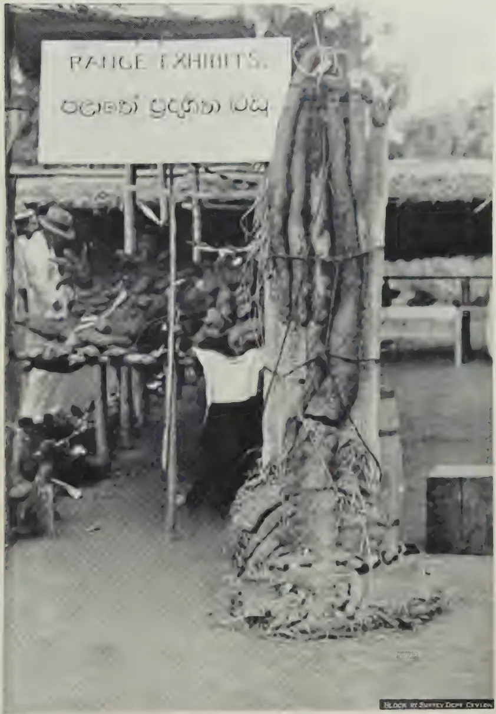
A black and white photograph of a large, thick tree trunk with extensive roots, displayed as a specimen in an exhibition booth. A sign above the booth reads "RANGE EXHIBITS." and "උළුකැටි වැලි (Ulakai Valli)". A person in a light-colored shirt and dark trousers is visible behind the tree. The background shows other exhibition structures and a fence.A SPECIMEN OF Dioscorea Alata (s. Ulakai Valli) EXHIBITED
AT THE HARIS PATTU YAM SHOW, FEBRUARY 1940
BLOCK BY SURVEY DEPT. Ceylon
This image is a scan of a blank page. The paper has a light beige or cream-colored tint. There are a few very small, dark specks scattered across the surface, which appear to be scanning artifacts or dust particles. No text, lines, or other markings are present on the page. 173USESYams are generally used boiled, baked or cooked as a vegetable. At the Harispattu Yam Show a special feature was the display of various preparations such as cakes, sweetmeats, hoppers and pittoo prepared from the flour of dioscoreas. This display for which the Agricultural Instructor, Katugastota, was entirely responsible showed that Dioscorea yam could be put to culinary uses to which the people of this country are not accustomed.
Dioscorea flour is prepared by slicing the yam and sun-drying the slices or chips very thoroughly. The dried slices or chips are milled or pounded and thereafter the powdered material is sieved in the same way as rice flour using the penera (a sieve made of fine muslin, commonly used in village households).
174STOCK animals react very strongly to climatic changes because their temperature, respiration, digestion, fertility, &c., are thereby affected. The problem of degeneration, and the influence of heredity and environment upon animals are closely connected with the climate and temperature of the region in which the animals are kept, and consequently determine the success or failure of stock farming.
In this article a short synopsis is given of the observations made at Messina in experiments upon cattle in respect of the above-mentioned matters.
Breeders of improved exotic cattle breeds, particularly in those regions where no degeneration takes place, hold the view that if cattle are well bred and well fed no degeneration will take place.
Breeders in those areas where degeneration does take place always express a desire to know whether heredity or environment is the more important factor in cattle-breeding. The answer to this question is that both heredity and environment influence the ultimate development of the animal to an equal extent. All species develop until they reach a state of stable equilibrium in relation to their environment.
Environment, however, connotes more than the mere feeding of animals. It includes such factors as temperature, rainfall, relative humidity, sunshine, light intensity, light rays, wind, &c.; in other words, the climate of the environment.
In our examination, therefore, of the influence of climate upon cattle, the reaction, in particular, of various exotic cattle breeds (Bos Taurus) and Afrikander (Bos Indicus), and first generation (F. 1) crossbred cattle (Afrikander x exotic) to weather conditions will be described.
In order to understand what is meant by climate, it is necessary to define the term as follows: Climate is the result of the total effect of the sun, the atmosphere, and the earth upon animate objects—in this case cattle in
* By J. C. Bonsma, Animal Husbandry Research Officer, Division of Animal and Crop Production, in collaboration with G. D. J. Scholtz and F. J. G. Badenhorst, Research Station, Messina, in Farming in South Africa, Vol. XV., No. 166, January, 1940.
This image is a scan of a blank page. The paper has a light beige or cream-colored tint. There are a few very small, dark specks scattered across the surface, which appear to be scanning artifacts or dust particles. No text, lines, or other markings are present on the page.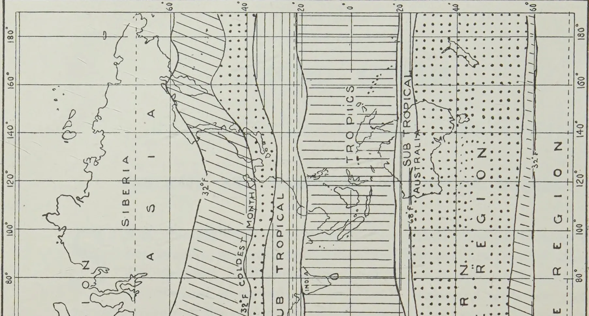
The figure is a world map illustrating climate zones and isotherms. The map is bounded by 80°N to 60°S latitude and 80°W to 180° longitude. Major regions labeled include Siberia, North America, Subtropical, Tropics, Australia, and the Northern Region. Isotherms are shown as lines, with 32°F and 68°F specifically marked. The Northern Region is subdivided into a 'MONTH' area and a 'SUB TROPICAL' area. The map uses various hatching patterns: diagonal lines for the cold isotherm, dots for the Northern Region, and horizontal lines for the Tropics. The word 'INDIA' is written vertically in the Indian Ocean.
Block by Survey Dept. Ceylon.
temperatures and little fluctuation in the isotherms
vertical lines, provided that they are
temperature and rainfall.
![A world map showing climate zones and isotherms. The map is divided into Northern Hemisphere (NORTH AMERICA, EUROPE, RUSSIA, GREENLAND, NORTH POLAR) and Southern Hemisphere (SOUTH AMERICA, AFRICA, S.A., SOUTHERN POLAR). Key features include the Arctic Circle, Tropic of Cancer, Equator, Tropic of Capricorn, and Antarctic Circle. Climate zones are labeled: SUBTROPICAL, TROPICS, NORTHERN TEMPERATURE REGION, and SUBTROPICAL. Isotherms are marked with temperatures: 68°F, 58°F, 32°F, and 68°F. Specific locations like Cape Town, Durban, and South Africa are noted. The map uses different patterns (dots, horizontal lines, diagonal lines) to represent different climate regions.](d5a5d2a60033251e7eb391aee34a0c5f_1_img.webp)
The map illustrates the global distribution of climate zones based on temperature. Key features include:
Climate Map.—From observations made it appears that degeneration due to high temperature will occur only on farms falling within those areas indicated by horizontal and vertical lines. These areas will not be affected by such geographical factors as high elevation, low temperature, etc.
175sub-tropical regions. In determining how cattle are affected by climate, it is necessary to observe meteorological phenomena daily. The latter include all the atmospheric conditions which are determined at fixed times by such accurate instruments as the thermometer, the sunshine recorder (Campbell-Stokes) and the hygrometer.
The sum of all meteorological phenomena extending over long periods determines the climate of a particular area. Geographical situation, which is indicated by degrees of longitude and latitude, height above sea-level, proximity to mountains, &c., largely determine the daily fluctuations of weather phenomena.
The normal distribution of temperatures over the whole globe has been fairly accurately determined. They are indicated by lines drawn through points having the same temperatures. These are termed "isothermal lines". The isothermal line on a map of the world therefore indicates the average temperatures at sea-level during a fixed period as, for example, the winter or summer. For every 1,000 ft. above sea-level there is a drop of 3°F. in the isotherm.
In the first place, therefore, it is essential in an investigation of the reaction of animals to temperature to indicate where exotic cattle breeds developed, and what fluctuations there are between the July and January isotherms.
The exotic cattle breeds (Bos Taurus) developed in north-western Europe where the isothermal fluctuations range from 35°F. in winter to 63°F. in summer, with an average relative humidity of 80 per cent., while the same cattle breeds have to adapt themselves in South Africa in regions where the winter isotherm is 68°F. and the summer isotherm 90°F., with a relative humidity which is often lower than 80 per cent.
In order to determine how cattle breeds react to temperature fluctuations, experiments have been in progress for nearly 3 years on the research station at Messina, Northern Transvaal, where the respiration count and body temperatures of a large herd of Hereford, Aberdeen Angus, Shorthorn and Afrikander cattle are taken every half-hour of the day on fixed days, with a view to ascertaining how the rise in the daily temperature affects the physiological functions of the animals.
Table 1 indicates the various fluctuations of atmospheric and body temperatures of the animals.
From Table 1 it clearly appears that as soon as the atmospheric temperature rises above 80°F. it is accompanied by a rise in the body temperature and a considerable increase in the respiration count of animals belonging to exotic breeds. In the case of exotic breeds, the respiratory centre loses its normal function of controlling the rhythmical movements of respiration when the temperature rises above 80°F., their breathing consequently being rapid, irregular and shallow.
176TABLE I.
Temperature Fluctuations and Respiration counts taken of Animals in the Sun
Research Station, Messina, October 26, 1939
| Time | Temperature °F. |
Body Temperatures of Bulls in °F. (Rectum Temperature) |
Respiration Count per Minute | |||||||||
|---|---|---|---|---|---|---|---|---|---|---|---|---|
| Sun | Shade | Hereford No. 3 |
Aberdeen Angus No. 3606 |
Shorthorn No. 6 |
Afrikaner No. 62 |
Shorthorn X Afri- kander F 1 |
Hereford No. 3 |
Aberdeen Angus No. 3606 |
Shorthorn No. 6 |
Afrikaner No. 62 |
Shorthorn X Afri- kander F 1 |
|
| 8 A.M. | 81 | 78 | 102.2 | 102.9 | 102.8 | 102.1 | 102.1 | 48 | 59 | 78 | 46 | 40 |
| 9 A.M. | 82 | 80 | 102.3 | 102.9 | 103.3 | 102.2 | 102.1 | 49 | 65 | 92 | 48 | 39 |
| 10 A.M. | 84 | 83 | 102.6 | 103.2 | 104.2 | 102.3 | 102.1 | 58 | 71 | 102 | 51 | 45 |
| 11 A.M. | 84 | 83 | 102.6 | 103.6 | 105.6 | 102.3 | 102.1 | 71 | 74 | 112 | 54 | 39 |
| 12 noon | 90 | 90 | 102.8 | 104.2 | 107.2 | 102.3 | 102 | 85 | 95 | 141 | 59 | 42 |
| 1 P.M. | 94 | 91 | 103.4 | 105.2 | 106.0 | 102.2 | 102 | 94 | 110 | 121 | 79 | 41 |
| 2 P.M. | 97 | 92 | 103.5 | 106.4 | 106.0 | 101.5 | 102.2 | 95 | 120 | 112 | 68 | 48 |
| 3 P.M. | 101 | 94 | 103.7 | 106.2 | 105.8 | 102 | 102.2 | 98 | 116 | 112 | 71 | 48 |
| 4 P.M. | 100 | 93 | 103.4 | 106.2 | 106.3 | 101.9 | 102.3 | 92 | 112 | 116 | 58 | 42 |
| 5 P.M. | 95 | 93 | 102.7 | 105.8 | 106.6 | 102 | 102.1 | 82 | 112 | 116 | 56 | 44 |
The amount of heat which the body of the animal can radiate varies indirectly according to the surrounding temperature. Consequently, the higher the atmospheric temperature, the smaller is the amount of heat lost by the animal through radiation. When the atmospheric temperature is 90°F. the skin temperature of animals out in the sun varies from 115°F. to 120°F., and a rise in body temperature consequently takes place—the animals then actually being in a feverish condition.
The skin temperatures of animals have a direct influence upon the body temperatures, and it appears that the thinner the skin, the greater is the amount of heat which penetrates the skin, and this results in overheating of the body.
If water is poured over animals so that the skin may cool off, an immediate drop in the body temperature occurs and also a considerable decrease in the number of respirations per minute.
The temperature of an Aberdeen-Angus bull, with a body temperature of 106.4°F. and a respiration count of 120 per minute fell to 103.5°F. and the respiration count to 76 per minute after the animal had been well wetted. Its skin temperature dropped from 117°F. to 102°F. after water was poured over it. On this day the maximum atmospheric temperature was 94°F. and water was poured over the bull at 1.30 P.M. The body and skin temperatures were taken again at 2 P.M.
Thickness of skin, therefore, to a large extent explains why the Afrikander and Hereford breeds are hardier than the Shorthorn and Aberdeen Angus. The skin of the two latter breeds is much thinner than that of the Hereford, while the skin of the Afrikander is in turn much thicker than that of all exotic breeds.
The Shorthorn and Aberdeen Angus are breeds which developed in regions where they enjoyed very good grazing and sufficient fodder. By selection and breeding these animals developed in such a way that they are large eaters, mature early, and are excellent animals for the conversion of coarse fodder into fat and flesh.
According to Wilcox (1922), Herefords are hardy, active animals which can make better use of coarse fodder and poor grazing, but to a certain extent lack the good qualities of economic conversion of fodder into fat and flesh when they are put upon fattening rations.
According to the U.S.A. census figures for 1935, one consequently finds only Herefords on the cattle ranches in the middle-west and south-western States of the United States of America where it is hot and dry, and grazing scarce. In those states where sufficient fodder is produced one finds the Shorthorn and the Aberdeen Angus.
178Owing to their geographical situation, there are a few farms in the squared portions where good exotic cattle can be bred, namely, against watersheds or against mountains lying from 4,000 to 5,000 ft. above sea-level, where it is much cooler than on farms in the immediate neighbourhood.
Aberdeen Angus and Shorthorn cattle have always been bred for their capacity to convert large quantities of fodder into well-filled carcasses. The physiological function has consequently so developed the digestive system of these breeds that it has become adapted to a high degree of feeding. Herefords and particularly Afrikanders, appear to be much better adapted to low standards of feeding, and they do not soon lose condition when grazing upon poor veld.
The amount of heat generated in the body of an animal is directly proportional to the quantity of fodder consumed. If, therefore, the body temperature of the animal rises to from 105° to 107°F. as a result of the external heat, it consequently eats much less so that the metabolic heat generated might be reduced, and under such circumstances an animal which has been accustomed to a high degree of feeding is affected most.
This explanation also applies to dairy cattle as, for example, Frieslands. These animals are large eaters, and they are consequently much more susceptible to overheating when the atmospheric temperature is high. For this reason these animals consume too little for their production during hot spells. As a result of the retardation of the metabolism of dairy cattle, the milk production immediately drops during hot spells.
The above phenomenon also explains why Frieslands must be crossed with Zebus in Jamaica and the Belgian Congo, and also why only Jerseys are found as dairy cattle in the Southern States of America where it is hot and dry.
The Jersey is a small cattle breed and consequently eats much less. For that reason it is less susceptible to overheating when the atmospheric temperature rises.
The above facts therefore explain why the best producers of meat and milk do not thrive so well in sub-tropical and tropical climates. Their physiological function of converting large quantities of fodder into flesh and milk is suppressed by the high atmospheric temperature which causes a feverish rise in the body temperature and also a loss of appetite.
The rise in body temperature apparently also induces a lowering of the moisture content of the muscular tissue, and this fact therefore to a certain extent explains why the juiciness of South African beef is low. As a result of the loss of moisture out of the muscular tissues there is a decrease in the size of the muscular fascicles.
In consequence of the fact that atmospheric temperature so greatly influences the fodder consumption of animals, it was decided to investigate the grazing habits of animals in order to see how many hours per day animals of the various breeds graze, and how many hours they lie or stand in the shade.
179Exotic breeds also cease to ruminate sooner when it grows very hot, that is, their metabolism is retarded.
Wind also exercises a great influence on the grazing habits of animals. On windy days the animals are restive and do not lie down much. On hot days they graze against the wind while on cool days they graze with the wind.
From observations made, it appears that many bulls belonging to exotic breeds become temporarily sterile during the hot months. This is probably due to the fact that the skin of the scrotum becomes heated to a temperature of about 115°F., and a temperature of roughly 106°F. results in the testicles being heated far in excess of the normal body temperature of approximately 102°F. Tissue in direct contact with a skin temperature of 115°F. rises to a much higher temperature than the body temperature because local inflammation is set up in tissue which is in direct contact with skin having a high temperature. In the Afrikander bull the skin of the scrotum is twice as thick, namely 0.4 cms., as compared with a thickness of 0.15 or 0.2 cms. in the case of exotic breeds, and when it grows hot the scrotum of the Afrikander bull is retracted so that the skin becomes puckered and, consequently, a poor conductor of heat. In addition, the testicles are retracted against the perivisceral cavity so that their temperature does not rise above that of the body temperature which is seldom higher than 102.5°F. in the case of an Afrikander bull.
Overheating of the testicles in the American buffalo x cattle crosses (Cattalo) results in sterility. Consequently, in the above-mentioned cases, the sterility during the hot months of a large percentage of bulls belonging to exotic breeds may be explained.
It is a well-known fact that super normal temperatures exercise a deleterious effect upon spermatozoa. Overheating of male animals to a temperature in excess of 106°F. will result in the death of the spermatozoa.
If bulls which are kept in the shade serve cows which have been out in the sun, the high body temperature of the latter will have a deleterious effect upon the vitality of the spermatozoa and the cows will consequently not conceive. (This apparently is one of the reasons why so few cows calve during July, August and September on farms where the bulls run with the cows during the summer.)
It seems as if the sterility so often found in rams of exotic mutton-breed sheep may be similarly explained.
In order to investigate the effect of temperature upon the glands, the blood circulation and the other physiological functions, it is essential that medical literature in particular should be consulted, and in this respect a large amount of basic research work has yet to be carried out.
180(a) The Influence of Temperature on the Blood.—The higher the body temperature rises, the lower does the haemoglobin index drop. Furthermore, it has been found that in tropical and sub-tropical countries there is a rise in the sugar-content of the blood.
The alkalinity of the blood is high and the average non-protein nitrogenous content of blood is also much higher than in countries with a temperate climate.
The serum-calcium of the blood also is higher, owing to the fact that a large amount of vitamin D is formed from the ergosterol in the skin when it is exposed to the strong actinic rays of the tropical sun. The vitamin D causes an increased absorption of calcium.
A high temperature also affects the salinity of the blood. During hot weather the salinity (blood chlorides) of the blood decreases, and it is therefore absolutely essential that animals be given sufficient salt during the summer months.
(b) Influence upon the Digestive System.—During hot weather animals lose their appetite to a large extent, and consequently eat less.
It has been found in dogs that during hot weather a smaller quantity of gastric juice, with decreased acidity, is secreted, with the result that increased bacterial action occurs. The contents of the alimentary tract are drier and firmer during summer, and for that reason animals must then drink large quantities of water in order to encourage the movement of food in the intestines. Evidently, this fact largely explains why the faeces of exotic cattle breeds are comparatively dry during the early summer when the nutrition value of the veld is at its maximum, and also why such cattle put on little weight.
In the sub-tropical regions of the southern hemisphere cattle can be easily fattened only during the months of April to September, because animals make less economic use of fodder during the hot months.
In human beings a rise of temperature in excess of 83°F results in a decrease in the metabolic value of nutrients.
(c) Influence upon the Endocrine Glands.—Great fluctuations in temperature, such as are found in countries of the northern hemisphere, have a stimulative effect upon the ductless glands. One of the main functions of the adrenals and the pituitary glands is to regulate the temperature of the body. Fluctuations in the atmospheric temperature consequently demand increased activity on the part of these glands.
If the temperature fluctuates only slightly, as is the case in many of the cattle ranching areas, these glands do little work, and long periods of heat have a suppressive effect upon them.
The secretion of the anterior pituitary gland is closely connected with the development of the bony structure or skeleton. A partial suppression of the function of the pituitary gland causes the bony structure to become smaller and weaker, which actually is the case with animals which are born and grow to maturity in tropical and sub-tropical regions.
181The glands also influence the sexual activity of animals, and for this reason it is possible that the heightened sexual activity of animals during the spring and autumn is also attributable to the stimulative effect of weather conditions upon the pituitary gland during those seasons.
It has not yet been established to what extent climate affects the ductless glands as comparatively little research work upon these glands has as yet been carried out.
(1) A rise in the atmospheric temperature in excess of 80°F. has a direct effect upon the body temperature and respiration count of all exotic beef-breeds, that is, there is a positive correlation.
It has little effect upon the body temperatures and respiration count of Afrikander cattle and the first generation (F.1) of an Afrikander x exotic cattle breed.
(2) Animals with thin skins are more susceptible to overheating than animals with thick skins.
(3) The pouring of water over animals causes a drop in the body temperature and respiration count.
(4) The body temperature and respiration count of animals which are kept in the shade is considerably lower than that of cattle kept in the sun.
182FARMERS in the greater part of the Colony are again faced with unfavourable conditions for making compost owing to excessive rain.
Too much rain packs the compost heaps and prevents the entry of air, which is so essential. In extreme cases the heaps may become sodden and cold, and it is not easy to revive them when they reach this condition.
If the materials in the heaps are fine and soft, such as veld grass, weeds and maize husks, and if the season opens with a long wet period as has happened during the last three seasons, it is best to delay the first turn until a break in the rain occurs. The rain will not penetrate such heaps deeper than about 6 inches, because at the level certain microbes form a slimy waterproof film which sheds further rain; and as long as the heap is undisturbed rain cannot penetrate further.
Aids to Aeration of Heaps.—Besides the ventilation channels in the floor of the heaps or pits already recommended in the Departmental Bulletin on Compost two other simpler but very effective means of improving the ventilation can be advised as described below.
(a) Sectional Air-gaps.—When rebuilding the wide and shallow heaps at the first turn, or at any turn for that matter, leave a space of 6 inches in width, every 3–5 yards along the heap. These break the heaps up into a line of smaller heaps 3–5 yards long separated by narrow gaps, and these gaps will materially improve the aeration with no extra work.
(b) Air Vents.—In each section of a heap or every few yards of a continuous heap, one or more air vents or chimneys may very simply be made by thrusting a crowbar or pole vertically down into the heap, and then by moving the top of the bar round and round with a circular motion, a hole is made in the heap by which air can readily enter.
Such air vents can be made, of course, at any time without disturbing the heaps and will go far to remedy, rapidly and cheaply, the bad aeration which may be due to packing of the heaps during wet periods or to other causes.
* By S. D. Timson, M. C., Assistant Agriculturist, in The Rhodesia Agricultural Journal, Volume XXXVII, No. 1, January, 1940.
183It should be borne in mind, however, that gaps and air-vents will not take the place of a proper turning of the compost heap, but are merely a valuable supplementary means of improving aeration.
Labour Saving Device.—“Compost-turning Mats.”—Although he has not yet been able to test it the writer considers that there are possibilities of appreciable labour saving by the simple means described below and he thinks that farmers may wish to test it without delay. The device, the use of which in compost making was suggested to the writer by Mr. J. M. Scott, who has found it valuable on a gardening scale, is one which is already well known to farmers in principle as a means of rapidly unloading bulky materials such as hay or silage from wagons.
It consists simply of two poles, which are joined together by a number of parallel wires, with cross connecting wires to prevent the main wires from spreading. Alternatively pig-netting can be used to join the poles.
The apparatus is laid on the ground on the site where a heap is to be built so that the mats of pig-netting or wire lie under the bottom of the heap, and the poles on either side. The heaps of compost are then built over them, so that the poles on one side are within a few feet of the side of the heap. When the heap is ready for the first turn the pole nearer the heap is pegged down to the ground, and to the other a team of oxen is hitched over the top of the heap. The oxen are then driven forward and the heap of compost is rolled over sideways. This should loosen up the heap of materials, and render the rebuilding of the heap much easier.
It is hoped that this device may be of particular value where a refractory material such as the sunhemp crop (more or less mature) is put through cattle kraals on the headlands of the field where it is grown.
After the first turn it should not be necessary to use the turning mats for the second turn, since breakdown should be sufficiently far advanced to make subsequent turning of the heaps easy.
Since the writer has not had the opportunity to test this idea for himself he is not in a position to give details regarding the best length of poles, or width of the mats, &c.; but he thinks readers may wish to try the device for themselves during the present season, and he hopes that it may prove helpful.
In order to simplify future reference to these implements it is proposed to call them “Compost-turning mats” or “Turning-mats”.
Compost and the War.—If the war continues for more than a year the purchase of the necessary fertilizers, even if they are obtainable in sufficient quantities, may prove a very serious problem to the farmers of this Colony, since it would appear to be likely that a large rise in price must take place when present stocks are exhausted.
If this happens a supply of compost will be of even greater value to the farmer than it has already been proved to be by those pioneers who have been making and using it for the past three seasons. Its great value as a manure
184and a fertilizer has been thoroughly established during that period by many farmers all over the Colony, and for practically all the crops commonly grown in the Colony, saving only tobacco. For the latter crop its value still remains to be proved, although the limited evidence at present available goes to show that it will also be of great use to tobacco growers. Many of them are testing it out thoroughly this season, and much evidence on this important matter should be available later.
It has been used with great success on all the following crops :—Maize ; vegetables and flowers ; potatoes—both the summer and winter crops ; wheat and barley ; ground nuts ; winter forage crops ; lucerne ; sunflowers ; and on improved pastures. It has proved to be particularly effective on the poor sandy soils where dressings of only 5 tons per acre have given remarkable increases in crop yields. On soils severely infested with witchweed it has given particularly striking increases in yields of maize. Dressings of 5–10 tons per acre have been used (and higher for potatoes), and at present it would appear that dressings of 5–8 tons (10–16 cubic yards or Scotch cart loads) per acre are suitable for most farm crops. Much heavier dressings can be used with advantage, of course, on market garden crops and potatoes.
Farmers can therefore be urged to make every ton of compost they can for their own sakes, and since maximum economic production has been called for from farmers throughout the Empire in order to ensure the successful waging of the war by the Empire and our Allies, it becomes a national duty.
In this connexion it may perhaps be pertinent to point out that the transport of agricultural produce from Africa as compared with their transport from countries further from Britain economises in shipping—a matter of great importance.
Dressings of well made compost at the rates suggested will supply the nitrogen and potash required for the production of high yields of all the common farm crops, save potatoes, and it will be possible by its use to materially reduce the applications of phosphatic fertilizers normally used, and still obtain high yields. During the past two seasons, for instance, the writer has seen splendid crops of maize grown on soils known to be deficient of phosphates, where dressings of compost alone were applied.
Owing to the greatly increased importance of compost as a manure due to the war, farmers are advised to consider carefully means of increasing their supplies, and the advisability of utilizing the top growth of their sunhemp and sunflower green manure crops for making compost on the lines laid down in section 3 of the Departmental Bulletin on “Compost” should receive their close attention. This method is past the experimental stage and is the cheapest way of making compost on a large scale thus far tried. Maize growers especially are urged to give the matter their careful consideration, since (a) they are large consumers of phosphatic fertilizers ; (b) they grow large acreages of sunhemp and sunflowers as green manure ; and (c) their maize fields which are severely infested with witchweed will show greater increases in yield of maize than uninfested land, or other types of crops grown by them.
185Naturally, the acreage of the crops they can handle as compost is limited by the number of stock they have available for supplying the necessary dung and urine, and as a rough indication it may be reckoned that where the cattle are kraaled at night only, one span of working oxen or their equivalent, for every 20 to 25 acres of a well grown crop of sunhemp 6-8 feet high will be required, where the composting of the sunhemp is carried on for the four months April to July inclusive. Working oxen will require some extra feed, during June and July at least, in the form of silage, veld hay, &c. Where the supply of pasture allows a small herd of good class native bred cows or heifers and a suitable bull may be purchased to be used for this purpose, the male progeny later being sold for slaughter. Those farmers too, who fatten cattle, may with advantage purchase them two to four months before they commence fattening them and use them in the interim for composting, providing they ensure that the cattle lose no weight whilst so employed.
The farmer who realizes the value of compost soon reaches the limit of the ordinary crop wastes available on the farm, such as maize wastes, sunflower stalks, spoilt hay and silage, and old veld grass, and he must then turn to other sources of raw materials, and the writer considers that the employment of the top growth of the green manure crop is the next logical step, particularly under war conditions.
186MINUTES OF THE FIFTIETH MEETING OF THE
RUBBER RESEARCH BOARD HELD AT DARTON-
FIELD ESTATE, AGALAWATTA, AT 10 A.M.
ON THURSDAY, JANUARY 18, 1940
Mr. E. Rodrigo, C.C.S. (in the Chair); Mr. C. H. Collins, C.C.S. (Deputy Financial Secretary); Mr. I. L. Cameron; Mr. L. B. de Mel, J.P., U.M.; Mr. G. E. de Silva, M.S.C.; Mr. T. C. A. de Soysa; Mr. W. P. H. Dias, J.P.; Mr. L. P. Gapp; Mr. F. H. Griffith, M.S.C.; Mr. R. C. Kannangara, M.S.C.; Mr. J. C. Kelly; Mr. F. A. Obeyesekera; Mr. N. D. S. Silva, O.B.E., J.P.; and Mr. E. W. Whitelaw.
Mr. T. E. H. O'Brien, Director, was present by invitation.
Draft minutes of the meeting held on October 12, 1939, which had been circulated to members were confirmed and signed by the Chairman.
The Chairman reported the following changes in the membership of the Board since the last meeting:—
(a) Mr. F. H. Griffith, M.S.C., had resumed membership from November 15, 1939, on his return from leave relieving Mr. L. E. Russell who had acted for him.
(b) Mr. F. H. Griffith, M.S.C., had been renominated as a representative of the Planters' Association of Ceylon for a further period of three years from November 15, 1939.
(c) Mr. F. A. Obeyesekere had been renominated to represent the small-holders for a further period of three years from November 26, 1939.
Decided that the Director should attend the Conference of Directors of rubber research organisations in the East, to be held at the headquarters of the Rubber Research Institute of Malaya on February 26, 1940. The Director was authorised to spend approximately 2 weeks in Malaya and to pay short visits to Java and Sumatra.
Consideration was given to letters from the Ceylon Estates Proprietary Association; Low-Country Products Association; Planters' Association of Ceylon and Rubber Growers' Association, expressing the views of the associations on the proposal to stabilise the Board's income from cess collections. The Chairman was asked to reply to points raised by one of the associations.
187(a) Statement of Receipts and Payments of the Board for the quarter ended September 30, 1939.—was adopted.
(b) Dartonfield and Nivitigalakele accounts for August and September, 1939—were tabled.
(c) Ceylon Government 3½ per cent. Loan 1949/51.—Reported that a sum of Rs. 75,000 had been invested in the Ceylon Government 3½ per cent. Loan 1949/51.
(d) Fixed Deposits.—Reported that fixed deposits totalling Rs. 85,000 had been renewed for a period of 12 months.
(e) Supplementary votes.—Supplementary votes were approved as follows :—
| Headquarters Votes | .. | Rs. 450 |
| Estate Votes | .. | Rs. 1,240 |
Re-engagement of Director.—The Chairman reported that the Director's service contract was due to terminate on December 19, 1940. After consideration it was decided to offer re-engagement for a period of 3 years and 8 months in accordance with the terms of service previously approved for officers recruited from abroad. Leave of absence out of the Island was also approved for a period of 8 months from April 1. The Director accepted re-engagement on the terms offered. The Board unanimously passed a special vote of appreciation of the useful work done by Mr. O'Brien during his present tour of service.
Recommendations made at a meeting held on November 28, 1939, were considered.
Visiting Agents' Visits.—The recommendation was approved that the Visiting Agent should inspect the Board's estates twice annually in future instead of three times, and that the fee per visit be increased by Rs. 50.
Establishment of seed gardens.—The desirability of establishing isolated seed gardens planted with clones which are being used experimentally for breeding trials was endorsed and the Chairman agreed to place concrete proposals before the Board at a later date.
Clone Museum in mid-country area.—Decided that application be made to Government for the lease of 25–30 acres of land in a mid-country area for the purpose of studying the resistance to Oidium of proved and promising clones.
Land at Nivitigalakele.—Decided that application be made to Government for the lease of an additional 100 acres of land near to Nivitigalakele to provide for future field trials.
Minutes of meetings of the London Advisory Committee for Rubber Research (Ceylon and Malaya) and the Technical Sub-Committee held on April 28 and September 29, 1939, were tabled.
1889. PROGRESS REPORTS.Progress reports of the Technical Officers for the quarter ended September 30, 1939, were considered and adopted.
10. RESEARCH PROGRAMMES FOR 1940.Research Programmes for 1940, were considered and adopted. It was noted that the programmes would be followed subject to any modifications which might become necessary owing to war conditions.
11. PUBLICATIONS.The Planting Memorandum entitled "Emergency Rubber Coagulants" which had been issued to the press in English and Sinhalese as a communication from the Research Scheme was tabled.
Research Laboratories,
Dartonfield,
Agalawatta.
February 5, 1940.
189MINUTES OF THE FORTY-NINTH MEETING OF THE
BOARD OF MANAGEMENT, COCONUT RESEARCH
SCHEME, HELD AT BANDIRIPPUWA ESTATE,
LUNUWILA, ON FRIDAY, JANUARY 19,
1940, at 10.30 A.M.
Mr. E. Rodrigo, C.C.S., Acting Director of Agriculture (in the Chair); Mr. C. H. Collins, C.C.S. (Treasury Representative); Mr. A. Ekanayake; Mr. Jas. P. Fernando; Mr. D. D. Karunaratne, J.P.; Mr. G. Panditsekere, J.P., U.M.; Mr. H. W. Peiris, Mr. L. J. M. Peiris, M.B.E., B.A.; Mr. E. R. Tambimuttu, M.S.C.
Dr. R. Child, Director of Research, acted as Secretary.
Apology for absence was received from Mr. O. B. M. Cheyne.
The minutes of the previous meeting held on Wednesday, October 11, 1939, which had been circulated to members were confirmed.
The Chairman reported that since the last meeting, Mr. Pieris had arrived in London on October 13, 1939, and the latest information was that he had arranged to leave England on January 6, for Trinidad via New York.
Bibliography of Literature on the Coconut Palm.—The Chairman reported that the “Bibliography of Literature on the Coconut Palm” prepared by Mr. Pieris, was in a form ready for publication.
It was decided to defer the publication of the Bibliography until more favourable times.
Considerable discussion took place on the subject of Mr. Menon’s work, following which the Board passed the following resolution :—
“Having considered the Report of Mr. S. R. K. Menon on the work carried out under its auspices since April, 1938, the Board of Management, Coconut Research Scheme, has decided to suggest that the Ceylon Coconut Board examine the commercial possibilities of the work, and, if they think it desirable, assume full responsibility for its further development. Should the Ceylon Coconut Board agree and enter into a satisfactory arrangement with Mr. Menon, the Board of Management, Coconut Research Scheme, will be prepared to assign all its interest in the matter to the Ceylon Coconut Board.”
3—J. N. 92903 (2/40)
190In conveying this resolution to the Coconut Board, the Chairman was instructed to add that the Research Scheme will continue to offer its fullest collaboration in the provision of such laboratory facilities as it is able to provide.
Statement of Receipts and Payments.—The Statement of Receipts and Payments for the Quarter ended December 31, 1939, was tabled and approved.
(a) Estate Estimates, 1940.—In accordance with the Board's instruction at the previous meeting details of the Estimates of Expenditure on Bandirippuwa and Ratmalagara Estates were tabled.
The Chairman hoped that comments and suggestions would be communicated by members to the Director of Research. In reply to a question by Mr. L. J. M. Peiris, the Director of Research said that the annual reports on the estates would be circulated at an early date and that the 1940 estimates could be read in connection with those.
It was decided to place this item again on the agenda for the next meeting for discussion if necessary.
(b) Estate Progress Reports.—The Progress Reports for December, 1939, of Bandirippuwa Estate and of Ratmalagara Estate were tabled and approved.
(c) Survey of Bandirippuwa Estate.—The Chairman said that it was desirable that Bandirippuwa Estate should be accurately surveyed and large scale plans prepared, not so much with regard to its external boundaries as to define more exactly than was now possible the boundaries and areas of various blocks, experimental and others, inside the Estate. The Director of Research had obtained estimates for the work, which the Surveyor-General had reported were reasonable.
It was decided that the question of a survey should be postponed until after the appointment of the Visiting Agent, since it might be necessary to take into account any suggestions he might make for re-dividing certain areas.
(d) Rubber Plants at Ratmalagara Estate.—The Chairman reported that the Rubber Research Scheme wished to establish areas for raising clonal seed in places isolated from general rubber planting, and had inquired whether the Coconut Research Scheme could assist by providing a small area at Ratmalagara Estate. As members who had visited Ratmalagara knew, 10 budded rubber plants had already been put out there.
Should the present small planting give indications that Ratmalagara would be suitable for raising seed at least of certain clones, the Rubber Research Scheme would like to have 2 acres of land for further experiments.
The Board unanimously expressed their wish to give every assistance to the Rubber Research Scheme and agreed that the Superintendent, Ratmalagara Estate, should at once be instructed to mark out 2 acres, as near as possible to the existing rubber plants, to be reserved for their possible requirements.
191CORRESPONDENCE.(a) Letter from Assistant Government Agent, Puttalam, re. Small-holdings Officers.—A letter dated January 3, 1940, from the Assistant Government Agent, Puttalam, to the Chairman was tabled. The letter forwarded the following resolution passed at a meeting of the Puttalam-Chilaw District Agricultural Committee held on November 4, 1939 :—
“that the main source of living of the residents of these two districts being the income of the coconut palm and in view of the very low prices of copra, coupled with the alarming decrease in the yield of nuts, as a consequent result of the abnormal drought experienced, the Director of the Coconut Research Scheme be requested to appoint Small Holders’ Officer or Officers to give necessary instructions and demonstrations regarding the economical methods of cultivation and manuring suitable for the different localities and thus save their properties from ruination and to secure better results.”
The Chairman said that the question of the appointment of Small-holdings Officers had been discussed before by the Board, for example, at the 29th and 30th meetings held on September 27 and December 13, 1935. It was very difficult to see what assistance could be afforded to small-holders by the appointment of small-holdings officers, or how the duties of such officers could be defined and adequately controlled. In his opinion, a much more practicable form of assistance would be the opening of demonstration centres such as those contemplated in the “Draft Memorandum on the Future of the Coconut Research Scheme”. It might even be possible to achieve this end without actual purchase of land, by subsidising one or two small land-owners in the Chilaw district, who would work their lands under the Scheme’s supervision and advice, partly with assistance in the form of fertilizers, selected seednuts for re-placing dud palms, &c. The Assistant Government Agent, Puttalam, might assist in finding suitable holdings for such a purpose.
The Board agreed that the appointment of small-holdings officers, even if funds were available, would be of limited value, and instructed the Director of Research to investigate the possibilities of opening demonstration centres on the lines suggested, the Assistant Government Agent to be informed of the Board’s action in the matter.
(b) Letter from Mr. T. J. Cooke.—A letter from Mr. T. J. Cooke, addressed to the Secretary, Planters’ Association, Kandy, had been referred by the latter to the Association’s representatives on the Board of Management, Mr. O. B. M. Cheyne and Mr. A. Ekanayake. The letter urged the Planters’ Association to suggest that the Scheme “should open an experimental station in the Eastern Province for coconuts, as the conditions prevailing in the district are vastly different from those on the other side of the Island.”
The Chairman thought that, while it would not of course be possible for financial reasons to open an experimental station such as Bandirippuwa or even Ratmalagara, it might be feasible for the Scheme to purchase an estate and run it on commercial lines. The estate might be an old one which could
4—J. N. 92903 (2/40) 192be taken in hand for replanting and regeneration, and would become a centre for advice and demonstration. Mr. James P. Fernando, thought that a smaller demonstration centre would suffice.
Mr. E. R. Tambimuttu suggested that it would be better in the first place to organize some sort of public meeting of those interested in coconuts in the Eastern Province, say with the help of the Government Agent, and to get some further idea of what assistance the Scheme could be expected to afford.
The Director of Research said that he was not unfamiliar with the Eastern Province, and had in fact tried to spend a week or so there each year ; he was in touch with many of the estates.
It was decided that the Director of Research should arrange an early circuit in the province and should study the problems of the area, and the possibilities of the suggestions put forward by the Chairman, Mr. Tambimuttu and others. It was expected that it would be possible to report at the next following meeting but one.
(c) Provident Fund.—The Deputy Financial Secretary and the Director of Research were accordingly appointed a Sub-Committee to report upon the rules of the Provident Fund.
(d) Future of the Coconut Research Scheme.—A letter from Mr. O. B. M. Cheyne was read, bringing the following question to the notice of the Board : “ In view of better crops and an improvement in the copra market this year, could the question of increasing the Cess as originally recommended be now reconsidered.”
After some discussion the Board expressed the opinion that, since the decision was taken on September 15, 1939, to defer any proposals for increased cess, too short a time had elapsed. it was still too early to decide whether the industry would be for any long period in a position to pay an increased cess.
Acetic Acid.—Mr. Collins referred to the investigation of acetic acid production from coconut shells, previously mentioned at the meeting of the Board held on September 15, 1939, and said that a scheme had been submitted to Government by the Director of Commerce and Industries for the erection of a factory. The Director of Research said that he had kept in touch with the Department of Commerce and Industries. His own personal views had been expressed in an article in The Tropical Agriculturist in October, 1939. Since then further work had been done, but he still considered that local production of acetic acid from shells definitely depended on the existence of a good market for charcoal and there appeared little prospect of competing with imported acetic acid in normal times.
The Director of Research undertook to keep the Board informed of developments through their log book of experiments.
The meeting adjourned at 12.40 P.M.
193ANIMAL DISEASE RETURN FOR THE MONTH
ENDED FEBRUARY 29, 1940
| Province, &c. | Disease | No. of Cases up to date since Jan. 1, 1940 | Fresh Cases | Deaths | Recoveries | Balance ill | No. shot |
|---|---|---|---|---|---|---|---|
| Western | Foot-and-Mouth Disease | 58 | 58 | 6 | 37 | 15 | .. |
| Piroplasmosis | 1 | 1 | .. | 1 | .. | .. | |
| Contagious Mange | 2 | 2 | .. | 2 | .. | .. | |
| Colombo Municipality | Foot-and-mouth disease | 44 | 41 | .. | 2 | 41 | 1 |
| Rabies | 9 | 4 | 9 | .. | .. | .. | |
| Cattle Quarantine Station | Anthrax | 1 | 1 | 1 | .. | .. | .. |
| Central | Foot-and-mouth disease | 192 | 29 | 1 | 161 | 29 | 1 |
| Anthrax | 1 | 1 | 1 | .. | .. | .. | |
| Rabies | 8 | 4 | .. | .. | .. | 8 | |
| Piroplasmosis | 5 | 5 | .. | 5 | .. | .. | |
| Southern | Rabies | 4 | 1 | .. | .. | .. | 4 |
| Northern | Rabies | 5 | .. | .. | .. | .. | 5 |
| Eastern | Foot-and-mouth disease | 3 | .. | .. | 3 | .. | .. |
| North-Western | Goat pox | 12 | .. | 2 | 10 | .. | .. |
| North-Central | Hæmorrhagic Septicæmia | 20 | 20 | 20 | .. | .. | .. |
| Foot-and-mouth disease | 86 | 57 | 1 | 56 | 29 | .. | |
| Uva | Rabies | 3 | .. | .. | .. | .. | 3 |
| Sabaragamuwa | Rabies | 2 | 1 | .. | .. | .. | 2 |
Department of Agriculture,
Peradeniya, March 19, 1940.
M. CRAWFORD,
Deputy Director (Animal Husbandry)
and Government Veterinary Surgeon.
| STATION | TEMPERATURE | HUMIDITY | Amount of Cloud | RAINFALL | ||||||
|---|---|---|---|---|---|---|---|---|---|---|
| Mean Maximum | Difference from Average | Mean Minimum | Difference from Average | DAY | NIGHT (from Minimum) | Amount | No. of Rainy Days | Difference from Average | ||
| ° | ° | ° | ° | % | % | Ins. | Ins. | |||
| Agalawatta | 89.8 | 0 | 70.5 | -0.7 | 68 | 90 | 3.7 | 4.23 | 9 | — |
| Anuradhapura | 87.6 | +0.9 | 68.9 | -0.4 | 67 | 95 | 4.8 | 0.99 | 4 | - 0.50 |
| Badulla | 78.7 | -1.3 | 63.5 | +0.5 | 70 | 91 | 4.6 | 3.86 | 9 | + 1.37 |
| Batticaloa | 82.1 | -0.8 | 73.7 | 0 | 79 | 93 | 4.9 | 7.63 | 8 | + 4.95 |
| Colombo | 88.2 | +1.5 | 72.9 | +1.0 | 67 | 90 | 4.0 | 1.42 | 7 | - 0.78 |
| Diyatalawa | 74.4 | -0.5 | 56.8 | +0.4 | 69 | 91 | 5.4 | 1.75 | 11 | - 0.05 |
| Galle | 84.4 | -0.8 | 73.5 | 0 | 69 | 84 | 4.2 | 2.77 | 7 | - 0.22 |
| Hakgala | 70.7 | +0.8 | 49.4 | -1.2 | 70 | 90 | 5.4 | 3.67 | 8 | + 0.25 |
| Hambantota | 86.7 | +0.7 | 74.0 | +1.2 | 72 | 88 | 3.8 | 0.53 | 4 | - 0.51 |
| Jaffna | 85.9 | +0.3 | 72.2 | 0 | 66 | 88 | 3.2 | 0 | 0 | - 1.16 |
| Kandy | 88.2 | +2.1 | 67.4 | +0.4 | 59 | 85 | 3.7 | 1.34 | 4 | - 0.46 |
| Kurunegala | 92.1 | +2.4 | 69.3 | 0 | 57 | 93 | 3.8 | 0.84 | 6 | - 0.85 |
| Lunuwila | 92.6 | +3.8 | 71.8 | +0.8 | 63 | 93 | 3.2 | 0.10 | 3 | — |
| Mannar | 85.5 | -1.2 | 73.7 | +0.1 | 70 | 88 | 4.1 | 0.46 | 2 | - 1.27 |
| Nuwaru Eliya | 69.7 | -0.2 | 45.0 | +0.8 | 62 | 90 | 5.6 | 1.91 | 7 | + 0.20 |
| Puttalam | 89.5 | +1.3 | 70.2 | +0.1 | 68 | 95 | 3.8 | 0.31 | 4 | - 0.76 |
| Ratnapura | 93.0 | +1.3 | 72.1 | +1.0 | 64 | 90 | 5.0 | 3.26 | 11 | - 1.18 |
| Talawakele | 76.9 | +0.9 | 54.9 | +0.6 | 52 | 75 | 3.7 | 3.57 | 7 | — |
| Trincomalee | 81.5 | -1.2 | 75.5 | -0.2 | 77 | 84 | 4.2 | 3.71 | 7 | + 1.67 |
Generally speaking, the rainfall for February was in excess in the eastern half and in deficit in the western half of the Island. The largest excesses occurred in a small area to the immediate north-east of the central hills, where St. Martin's (Lower) recorded an excess of 16.56 inches for the month, St. Martin's (Upper) an excess of 14.89 inches, and Horaborawewa an excess of 14.39 inches, while excesses of over 10 inches were also recorded at a few other stations in the same locality, and in the Tirrukovil-Kanankadu-Viragoda area in the extreme east. The largest deficits were 4.02 inches at Keragala, and 3.43 inches at Avissawella Estate, in the western mid-country.
The highest monthly totals were 25.07 inches at St. Martin's (Lower), 24.00 inches at St. Martin's (Upper), and 22.91 inches at Hendon, while totals of over 15 inches were also recorded at a few other stations in the same area, or in the east coastal districts. The whole of the country in the north, north-west, and south-east of the Island received less than 2 inches for the month.
There were 21 daily falls of 5 inches and over during the month, the majority of which occurred on the 15th. The highest fall reported was 10.50 inches at St. Martin's on that day.
During the first few days of the month, there was an appreciable amount of rain, as a result of scattered thunderstorms. From the 5th to about the 12th, there was very little rain. During the next 4 days rain was fairly widespread, and moderately heavy on the east side, particularly in the immediate neighbourhood of the hills. This increase of rain coincided with a general steepening of the northerly or north-easterly pressure gradient. The rest of the month was comparatively dry, except for the period 20th-24th, during which an appreciable amount of rain was experienced in the south-west quarter, as a result of local thunderstorms.
Temperatures were generally above average. The lowest temperature recorded during the month was 36.7° at Nuwaru Eliya on the morning of the 13th, while the highest shade temperature was 96.8° at Kurunegala on the 29th. Humidity and cloud amount were distributed on either side of average. The barometric pressure was appreciably above normal. Winds were generally north-easterly and above average strength.
D. T. E. DASSANAYAKE,
Superintendent, Observatory.